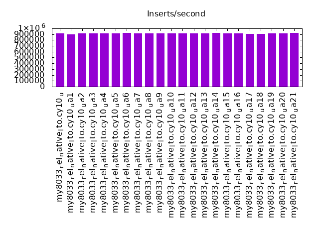
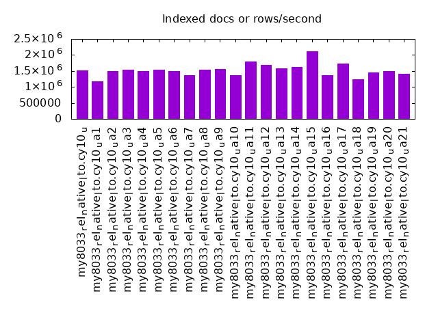
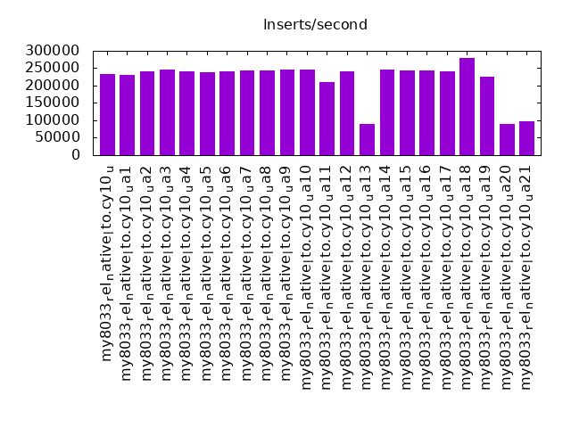
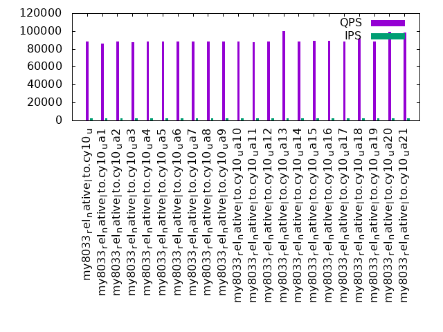
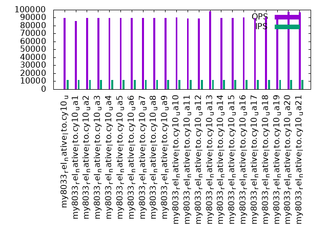
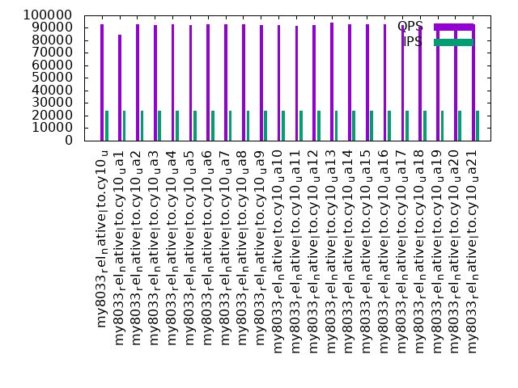

This is a report for the insert benchmark with 480M docs and 24 client(s). It is generated by scripts (bash, awk, sed) and Tufte might not be impressed. An overview of the insert benchmark is here and a short update is here. Below, by DBMS, I mean DBMS+version.config. An example is my8020.c10b40 where my means MySQL, 8020 is version 8.0.20 and c10b40 is the name for the configuration file.
The test server has 80 cores with hyperthreads enabled, 256G RAM and fast storage. The benchmark was run with 24 clients and there were 1 or 3 connections per client (1 for queries or inserts without rate limits, 1+1 for rate limited inserts+deletes). There are 24 tables, with client per table. It loads 480M rows without secondary indexes, creates secondary indexes, then inserts 960M rows with a delete per insert to avoid growing the table. It then does 3 read+write tests for 1800s each that do queries as fast as possible with 100, 500 and then 1000 inserts/second/client concurrent with the queries and 1000 deletes/second to avoid growing the table. The database is cached by InnoDB.
The tested DBMS are:
The numbers are inserts/s for l.i0 and l.i1, indexed docs (or rows) /s for l.x and queries/s for q*.2. The values are the average rate over the entire test for inserts (IPS) and queries (QPS). The range of values for IPS and QPS is split into 3 parts: bottom 25%, middle 50%, top 25%. Values in the bottom 25% have a red background, values in the top 25% have a green background and values in the middle have no color. A gray background is used for values that can be ignored because the DBMS did not sustain the target insert rate. Red backgrounds are not used when the minimum value is within 80% of the max value.
| dbms | l.i0 | l.x | l.i1 | q100.1 | q500.1 | q1000.1 |
|---|---|---|---|---|---|---|
| my8033_rel_native_lto.cy10_u | 917782 | 1519304 | 234375 | 88428 | 89513 | 92676 |
| my8033_rel_native_lto.cy10_ua1 | 893855 | 1176716 | 230548 | 86148 | 85611 | 84540 |
| my8033_rel_native_lto.cy10_ua2 | 910816 | 1486378 | 241631 | 88138 | 89585 | 92750 |
| my8033_rel_native_lto.cy10_ua3 | 916030 | 1533866 | 245587 | 87662 | 89467 | 92225 |
| my8033_rel_native_lto.cy10_ua4 | 916030 | 1500312 | 241814 | 87884 | 89562 | 92741 |
| my8033_rel_native_lto.cy10_ua5 | 914286 | 1538782 | 237447 | 88576 | 89533 | 92393 |
| my8033_rel_native_lto.cy10_ua6 | 919540 | 1490994 | 242302 | 88587 | 89511 | 92920 |
| my8033_rel_native_lto.cy10_ua7 | 917782 | 1367806 | 242363 | 88614 | 89848 | 92693 |
| my8033_rel_native_lto.cy10_ua8 | 917782 | 1543730 | 243655 | 88532 | 89578 | 92818 |
| my8033_rel_native_lto.cy10_ua9 | 914286 | 1553722 | 245148 | 88452 | 89522 | 92420 |
| my8033_rel_native_lto.cy10_ua10 | 917782 | 1375645 | 244960 | 88517 | 90223 | 92403 |
| my8033_rel_native_lto.cy10_ua11 | 910816 | 1798127 | 210250 | 87654 | 88763 | 91631 |
| my8033_rel_native_lto.cy10_ua12 | 910816 | 1690493 | 241145 | 87904 | 88844 | 92242 |
| my8033_rel_native_lto.cy10_ua13 | 914286 | 1579276 | 90395 | 100067 | 97829 | 94147 |
| my8033_rel_native_lto.cy10_ua14 | 919540 | 1616498 | 245462 | 88448 | 89691 | 92685 |
| my8033_rel_native_lto.cy10_ua15 | 912548 | 2124336 | 244773 | 88811 | 89688 | 92827 |
| my8033_rel_native_lto.cy10_ua16 | 917782 | 1367806 | 242608 | 88819 | 90016 | 92998 |
| my8033_rel_native_lto.cy10_ua17 | 907372 | 1733213 | 241935 | 88533 | 89762 | 92563 |
| my8033_rel_native_lto.cy10_ua18 | 903955 | 1247013 | 279883 | 91033 | 90734 | 91122 |
| my8033_rel_native_lto.cy10_ua19 | 916030 | 1450453 | 224824 | 88167 | 89579 | 92227 |
| my8033_rel_native_lto.cy10_ua20 | 912548 | 1486378 | 90464 | 99060 | 97348 | 93416 |
| my8033_rel_native_lto.cy10_ua21 | 921305 | 1416224 | 96241 | 98518 | 96866 | 93173 |
This table has relative throughput, throughput for the DBMS relative to the DBMS in the first line, using the absolute throughput from the previous table. Values less than 0.95 have a yellow background. Values greater than 1.05 have a blue background.
| dbms | l.i0 | l.x | l.i1 | q100.1 | q500.1 | q1000.1 |
|---|---|---|---|---|---|---|
| my8033_rel_native_lto.cy10_u | 1.00 | 1.00 | 1.00 | 1.00 | 1.00 | 1.00 |
| my8033_rel_native_lto.cy10_ua1 | 0.97 | 0.77 | 0.98 | 0.97 | 0.96 | 0.91 |
| my8033_rel_native_lto.cy10_ua2 | 0.99 | 0.98 | 1.03 | 1.00 | 1.00 | 1.00 |
| my8033_rel_native_lto.cy10_ua3 | 1.00 | 1.01 | 1.05 | 0.99 | 1.00 | 1.00 |
| my8033_rel_native_lto.cy10_ua4 | 1.00 | 0.99 | 1.03 | 0.99 | 1.00 | 1.00 |
| my8033_rel_native_lto.cy10_ua5 | 1.00 | 1.01 | 1.01 | 1.00 | 1.00 | 1.00 |
| my8033_rel_native_lto.cy10_ua6 | 1.00 | 0.98 | 1.03 | 1.00 | 1.00 | 1.00 |
| my8033_rel_native_lto.cy10_ua7 | 1.00 | 0.90 | 1.03 | 1.00 | 1.00 | 1.00 |
| my8033_rel_native_lto.cy10_ua8 | 1.00 | 1.02 | 1.04 | 1.00 | 1.00 | 1.00 |
| my8033_rel_native_lto.cy10_ua9 | 1.00 | 1.02 | 1.05 | 1.00 | 1.00 | 1.00 |
| my8033_rel_native_lto.cy10_ua10 | 1.00 | 0.91 | 1.05 | 1.00 | 1.01 | 1.00 |
| my8033_rel_native_lto.cy10_ua11 | 0.99 | 1.18 | 0.90 | 0.99 | 0.99 | 0.99 |
| my8033_rel_native_lto.cy10_ua12 | 0.99 | 1.11 | 1.03 | 0.99 | 0.99 | 1.00 |
| my8033_rel_native_lto.cy10_ua13 | 1.00 | 1.04 | 0.39 | 1.13 | 1.09 | 1.02 |
| my8033_rel_native_lto.cy10_ua14 | 1.00 | 1.06 | 1.05 | 1.00 | 1.00 | 1.00 |
| my8033_rel_native_lto.cy10_ua15 | 0.99 | 1.40 | 1.04 | 1.00 | 1.00 | 1.00 |
| my8033_rel_native_lto.cy10_ua16 | 1.00 | 0.90 | 1.04 | 1.00 | 1.01 | 1.00 |
| my8033_rel_native_lto.cy10_ua17 | 0.99 | 1.14 | 1.03 | 1.00 | 1.00 | 1.00 |
| my8033_rel_native_lto.cy10_ua18 | 0.98 | 0.82 | 1.19 | 1.03 | 1.01 | 0.98 |
| my8033_rel_native_lto.cy10_ua19 | 1.00 | 0.95 | 0.96 | 1.00 | 1.00 | 1.00 |
| my8033_rel_native_lto.cy10_ua20 | 0.99 | 0.98 | 0.39 | 1.12 | 1.09 | 1.01 |
| my8033_rel_native_lto.cy10_ua21 | 1.00 | 0.93 | 0.41 | 1.11 | 1.08 | 1.01 |
This lists the average rate of inserts/s for the tests that do inserts concurrent with queries. For such tests the query rate is listed in the table above. The read+write tests are setup so that the insert rate should match the target rate every second. Cells that are not at least 95% of the target have a red background to indicate a failure to satisfy the target.
| dbms | q100.1 | q500.1 | q1000.1 |
|---|---|---|---|
| my8033_rel_native_lto.cy10_u | 2378 | 11898 | 23821 |
| my8033_rel_native_lto.cy10_ua1 | 2366 | 11865 | 23802 |
| my8033_rel_native_lto.cy10_ua2 | 2378 | 11898 | 23815 |
| my8033_rel_native_lto.cy10_ua3 | 2378 | 11898 | 23821 |
| my8033_rel_native_lto.cy10_ua4 | 2378 | 11901 | 23834 |
| my8033_rel_native_lto.cy10_ua5 | 2378 | 11898 | 23828 |
| my8033_rel_native_lto.cy10_ua6 | 2378 | 11898 | 23821 |
| my8033_rel_native_lto.cy10_ua7 | 2378 | 11901 | 23821 |
| my8033_rel_native_lto.cy10_ua8 | 2378 | 11901 | 23821 |
| my8033_rel_native_lto.cy10_ua9 | 2378 | 11898 | 23815 |
| my8033_rel_native_lto.cy10_ua10 | 2378 | 11904 | 23821 |
| my8033_rel_native_lto.cy10_ua11 | 2378 | 11898 | 23821 |
| my8033_rel_native_lto.cy10_ua12 | 2378 | 11898 | 23821 |
| my8033_rel_native_lto.cy10_ua13 | 2381 | 11907 | 23828 |
| my8033_rel_native_lto.cy10_ua14 | 2378 | 11901 | 23821 |
| my8033_rel_native_lto.cy10_ua15 | 2378 | 11901 | 23821 |
| my8033_rel_native_lto.cy10_ua16 | 2378 | 11898 | 23821 |
| my8033_rel_native_lto.cy10_ua17 | 2378 | 11898 | 23821 |
| my8033_rel_native_lto.cy10_ua18 | 2376 | 11891 | 23808 |
| my8033_rel_native_lto.cy10_ua19 | 2378 | 11898 | 23821 |
| my8033_rel_native_lto.cy10_ua20 | 2381 | 11907 | 23828 |
| my8033_rel_native_lto.cy10_ua21 | 2381 | 11907 | 23834 |
| target | 2400 | 12000 | 24000 |
l.i0: load without secondary indexes. Graphs for performance per 1-second interval are here.
Average throughput:
Insert response time histogram: each cell has the percentage of responses that take <= the time in the header and max is the max response time in seconds. For the max column values in the top 25% of the range have a red background and in the bottom 25% of the range have a green background. The red background is not used when the min value is within 80% of the max value.
| dbms | 256us | 1ms | 4ms | 16ms | 64ms | 256ms | 1s | 4s | 16s | gt | max |
|---|---|---|---|---|---|---|---|---|---|---|---|
| my8033_rel_native_lto.cy10_u | 99.924 | 0.027 | 0.006 | 0.043 | 0.118 | ||||||
| my8033_rel_native_lto.cy10_ua1 | 99.904 | 0.048 | 0.005 | 0.043 | 0.119 | ||||||
| my8033_rel_native_lto.cy10_ua2 | 99.923 | 0.030 | 0.004 | 0.043 | 0.118 | ||||||
| my8033_rel_native_lto.cy10_ua3 | 99.928 | 0.025 | 0.003 | 0.043 | 0.121 | ||||||
| my8033_rel_native_lto.cy10_ua4 | 99.777 | 0.177 | 0.004 | 0.043 | 0.130 | ||||||
| my8033_rel_native_lto.cy10_ua5 | 99.924 | 0.028 | 0.005 | 0.043 | 0.127 | ||||||
| my8033_rel_native_lto.cy10_ua6 | 99.923 | 0.032 | 0.003 | 0.043 | 0.123 | ||||||
| my8033_rel_native_lto.cy10_ua7 | 99.925 | 0.028 | 0.004 | 0.043 | 0.119 | ||||||
| my8033_rel_native_lto.cy10_ua8 | 99.927 | 0.026 | 0.004 | 0.043 | 0.127 | ||||||
| my8033_rel_native_lto.cy10_ua9 | 99.926 | 0.029 | 0.002 | 0.043 | 0.136 | ||||||
| my8033_rel_native_lto.cy10_ua10 | 99.917 | 0.035 | 0.005 | 0.043 | 0.111 | ||||||
| my8033_rel_native_lto.cy10_ua11 | 99.872 | 0.058 | 0.027 | 0.043 | 0.156 | ||||||
| my8033_rel_native_lto.cy10_ua12 | 99.889 | 0.053 | 0.015 | 0.043 | 0.119 | ||||||
| my8033_rel_native_lto.cy10_ua13 | 99.928 | 0.025 | 0.004 | 0.043 | 0.117 | ||||||
| my8033_rel_native_lto.cy10_ua14 | 99.926 | 0.026 | 0.005 | 0.043 | 0.121 | ||||||
| my8033_rel_native_lto.cy10_ua15 | 99.923 | 0.030 | 0.004 | 0.043 | 0.129 | ||||||
| my8033_rel_native_lto.cy10_ua16 | 99.929 | 0.024 | 0.004 | 0.043 | 0.125 | ||||||
| my8033_rel_native_lto.cy10_ua17 | 99.924 | 0.030 | 0.003 | 0.043 | 0.122 | ||||||
| my8033_rel_native_lto.cy10_ua18 | 99.921 | 0.033 | 0.002 | 0.043 | 0.130 | ||||||
| my8033_rel_native_lto.cy10_ua19 | 99.926 | 0.028 | 0.003 | 0.043 | 0.130 | ||||||
| my8033_rel_native_lto.cy10_ua20 | 99.923 | 0.030 | 0.004 | 0.042 | 0.119 | ||||||
| my8033_rel_native_lto.cy10_ua21 | 99.924 | 0.029 | 0.004 | 0.043 | 0.125 |
Performance metrics for the DBMS listed above. Some are normalized by throughput, others are not. Legend for results is here.
ips qps rps rmbps wps wmbps rpq rkbpq wpi wkbpi csps cpups cspq cpupq dbgb1 dbgb2 rss maxop p50 p99 tag 917782 0 0 0.0 4378.5 217.0 0.000 0.000 0.005 0.242 208787 51.0 0.227 44 31.7 160.3 47.4 0.118 39760 34066 480m.my8033_rel_native_lto.cy10_u 893855 0 0 0.0 4285.6 209.5 0.000 0.000 0.005 0.240 237493 50.7 0.266 45 31.7 160.3 47.4 0.119 39361 33266 480m.my8033_rel_native_lto.cy10_ua1 910816 0 0 0.0 4720.4 224.0 0.000 0.000 0.005 0.252 208032 50.8 0.228 45 31.7 160.3 47.4 0.118 40260 34566 480m.my8033_rel_native_lto.cy10_ua2 916030 0 0 0.0 4733.5 226.5 0.000 0.000 0.005 0.253 212607 50.4 0.232 44 31.7 160.3 47.4 0.121 39960 34565 480m.my8033_rel_native_lto.cy10_ua3 916030 0 0 0.0 2941.4 207.3 0.000 0.000 0.003 0.232 210198 50.3 0.229 44 31.7 160.3 47.4 0.130 39760 34266 480m.my8033_rel_native_lto.cy10_ua4 914286 0 0 0.0 4354.8 215.3 0.000 0.000 0.005 0.241 210140 51.0 0.230 45 31.7 160.3 47.4 0.127 39760 34066 480m.my8033_rel_native_lto.cy10_ua5 919540 0 0 0.0 4374.7 214.3 0.000 0.000 0.005 0.239 210680 51.1 0.229 44 31.7 160.3 47.4 0.123 40060 34466 480m.my8033_rel_native_lto.cy10_ua6 917782 0 0 0.0 4368.9 216.0 0.000 0.000 0.005 0.241 206371 50.5 0.225 44 31.7 160.3 47.4 0.119 40059 34365 480m.my8033_rel_native_lto.cy10_ua7 917782 0 0 0.0 4368.4 217.0 0.000 0.000 0.005 0.242 209876 51.4 0.229 45 31.7 160.3 47.4 0.127 40464 34665 480m.my8033_rel_native_lto.cy10_ua8 914286 0 0 0.0 4347.2 215.5 0.000 0.000 0.005 0.241 205362 50.9 0.225 45 31.7 160.3 47.4 0.136 40060 34266 480m.my8033_rel_native_lto.cy10_ua9 917782 0 0 0.0 4356.3 215.5 0.000 0.000 0.005 0.240 216194 50.7 0.236 44 31.7 160.3 47.4 0.111 39561 33766 480m.my8033_rel_native_lto.cy10_ua10 910816 0 0 0.0 6065.8 262.6 0.000 0.000 0.007 0.295 209173 50.9 0.230 45 31.7 48.3 47.4 0.156 39561 33866 480m.my8033_rel_native_lto.cy10_ua11 910816 0 0 0.0 5784.3 252.7 0.000 0.000 0.006 0.284 210446 51.6 0.231 45 31.7 64.3 47.4 0.119 39556 33866 480m.my8033_rel_native_lto.cy10_ua12 914286 0 0 0.0 4351.0 215.8 0.000 0.000 0.005 0.242 206367 51.0 0.226 45 31.7 160.3 47.4 0.117 39760 34266 480m.my8033_rel_native_lto.cy10_ua13 919540 0 0 0.0 4371.1 216.6 0.000 0.000 0.005 0.241 208978 51.5 0.227 45 31.7 160.3 47.4 0.121 40460 34865 480m.my8033_rel_native_lto.cy10_ua14 912548 0 0 0.0 4347.5 215.0 0.000 0.000 0.005 0.241 209553 51.1 0.230 45 31.7 160.3 47.4 0.129 39660 33966 480m.my8033_rel_native_lto.cy10_ua15 917782 0 0 0.0 3530.1 193.1 0.000 0.000 0.004 0.215 199657 50.3 0.218 44 31.7 160.3 47.4 0.125 40363 34368 480m.my8033_rel_native_lto.cy10_ua16 907372 0 0 0.0 4058.6 177.0 0.000 0.000 0.004 0.200 208219 50.7 0.229 45 31.7 160.3 47.3 0.122 40060 34066 480m.my8033_rel_native_lto.cy10_ua17 903955 0 0 0.0 4371.4 214.1 0.000 0.000 0.005 0.243 208709 50.7 0.231 45 31.7 160.3 47.4 0.130 39461 34166 480m.my8033_rel_native_lto.cy10_ua18 916030 0 0 0.0 4362.3 216.3 0.000 0.000 0.005 0.242 214051 50.4 0.234 44 31.7 160.3 47.4 0.130 40260 33866 480m.my8033_rel_native_lto.cy10_ua19 912548 0 0 0.0 4340.1 215.4 0.000 0.000 0.005 0.242 210596 50.7 0.231 44 31.7 160.3 47.4 0.119 40560 34166 480m.my8033_rel_native_lto.cy10_ua20 921305 0 0 0.0 4366.7 216.8 0.000 0.000 0.005 0.241 216267 51.2 0.235 44 31.7 160.3 47.4 0.125 40360 34366 480m.my8033_rel_native_lto.cy10_ua21
l.x: create secondary indexes.
Average throughput:
Performance metrics for the DBMS listed above. Some are normalized by throughput, others are not. Legend for results is here.
ips qps rps rmbps wps wmbps rpq rkbpq wpi wkbpi csps cpups cspq cpupq dbgb1 dbgb2 rss maxop p50 p99 tag 1519304 0 8178 396.0 31920.6 1167.4 0.005 0.267 0.021 0.787 177999 72.5 0.117 38 70.6 199.2 68.1 0.008 NA NA 480m.my8033_rel_native_lto.cy10_u 1176716 0 6357 308.0 24754.0 907.3 0.005 0.268 0.021 0.790 237351 71.8 0.202 49 70.6 199.2 73.6 0.007 NA NA 480m.my8033_rel_native_lto.cy10_ua1 1486378 0 8045 389.9 31450.6 1152.9 0.005 0.269 0.021 0.794 190416 74.1 0.128 40 70.6 199.2 72.2 0.008 NA NA 480m.my8033_rel_native_lto.cy10_ua2 1533866 0 8306 402.4 32409.7 1187.1 0.005 0.269 0.021 0.793 193194 75.3 0.126 39 70.6 199.2 69.4 0.007 NA NA 480m.my8033_rel_native_lto.cy10_ua3 1500312 0 8032 389.7 33970.2 1140.1 0.005 0.266 0.023 0.778 234437 72.4 0.156 39 70.6 199.2 68.8 0.005 NA NA 480m.my8033_rel_native_lto.cy10_ua4 1538782 0 8308 402.4 32402.3 1186.3 0.005 0.268 0.021 0.789 182697 76.1 0.119 40 70.6 199.2 68.9 0.007 NA NA 480m.my8033_rel_native_lto.cy10_ua5 1490994 0 8048 389.9 31323.7 1143.8 0.005 0.268 0.021 0.786 177731 71.6 0.119 38 70.6 199.2 68.6 0.008 NA NA 480m.my8033_rel_native_lto.cy10_ua6 1367806 0 7359 356.3 28695.4 1050.6 0.005 0.267 0.021 0.787 186320 69.3 0.136 41 70.6 199.2 70.6 0.007 NA NA 480m.my8033_rel_native_lto.cy10_ua7 1543730 0 8305 402.4 32466.4 1187.8 0.005 0.267 0.021 0.788 170472 74.1 0.110 38 70.6 199.2 68.7 0.007 NA NA 480m.my8033_rel_native_lto.cy10_ua8 1553722 0 8314 402.5 32453.3 1187.6 0.005 0.265 0.021 0.783 179234 73.3 0.115 38 70.6 199.2 69.5 0.017 NA NA 480m.my8033_rel_native_lto.cy10_ua9 1375645 0 7363 356.6 28877.5 1055.0 0.005 0.265 0.021 0.785 201069 69.7 0.146 41 70.6 199.2 68.4 0.009 NA NA 480m.my8033_rel_native_lto.cy10_ua10 1798127 0 9714 470.8 36749.7 1359.4 0.005 0.268 0.020 0.774 154838 71.8 0.086 32 70.6 87.2 66.7 0.007 NA NA 480m.my8033_rel_native_lto.cy10_ua11 1690493 0 9043 437.9 34672.5 1273.9 0.005 0.265 0.021 0.772 182376 76.3 0.108 36 70.6 103.2 70.9 0.008 NA NA 480m.my8033_rel_native_lto.cy10_ua12 1579276 0 8450 409.2 33086.5 1209.4 0.005 0.265 0.021 0.784 174785 75.4 0.111 38 70.6 199.2 68.7 0.006 NA NA 480m.my8033_rel_native_lto.cy10_ua13 1616498 0 8731 422.9 34067.4 1246.9 0.005 0.268 0.021 0.790 169421 74.7 0.105 37 70.6 199.2 67.3 0.010 NA NA 480m.my8033_rel_native_lto.cy10_ua14 2124336 0 11440 554.4 43877.4 1708.3 0.005 0.267 0.021 0.823 158519 78.6 0.075 30 70.6 199.2 70.3 0.007 NA NA 480m.my8033_rel_native_lto.cy10_ua15 1367806 0 7359 356.4 28796.7 1053.7 0.005 0.267 0.021 0.789 181955 70.8 0.133 41 70.6 199.2 70.5 0.011 NA NA 480m.my8033_rel_native_lto.cy10_ua16 1733213 0 9347 453.4 28340.7 1190.9 0.005 0.268 0.016 0.704 174171 77.9 0.100 36 70.6 199.2 81.1 0.018 NA NA 480m.my8033_rel_native_lto.cy10_ua17 1247013 0 6692 324.1 26138.6 956.0 0.005 0.266 0.021 0.785 214057 70.2 0.172 45 70.6 199.2 69.0 0.009 NA NA 480m.my8033_rel_native_lto.cy10_ua18 1450453 0 7807 378.1 30477.5 1115.9 0.005 0.267 0.021 0.788 190351 73.2 0.131 40 70.6 199.2 71.0 0.016 NA NA 480m.my8033_rel_native_lto.cy10_ua19 1486378 0 8045 389.7 31276.7 1146.9 0.005 0.268 0.021 0.790 189425 73.6 0.127 40 70.6 199.2 68.7 0.013 NA NA 480m.my8033_rel_native_lto.cy10_ua20 1416224 0 7578 366.9 29598.8 1082.5 0.005 0.265 0.021 0.783 200913 71.9 0.142 41 70.6 199.2 69.3 0.006 NA NA 480m.my8033_rel_native_lto.cy10_ua21
l.i1: continue load after secondary indexes created. Graphs for performance per 1-second interval are here.
Average throughput:
Insert response time histogram: each cell has the percentage of responses that take <= the time in the header and max is the max response time in seconds. For the max column values in the top 25% of the range have a red background and in the bottom 25% of the range have a green background. The red background is not used when the min value is within 80% of the max value.
| dbms | 256us | 1ms | 4ms | 16ms | 64ms | 256ms | 1s | 4s | 16s | gt | max |
|---|---|---|---|---|---|---|---|---|---|---|---|
| my8033_rel_native_lto.cy10_u | 20.825 | 78.862 | 0.273 | 0.039 | 0.185 | ||||||
| my8033_rel_native_lto.cy10_ua1 | 17.256 | 82.412 | 0.194 | 0.133 | 0.006 | 0.396 | |||||
| my8033_rel_native_lto.cy10_ua2 | 18.849 | 80.812 | 0.285 | 0.053 | nonzero | 0.388 | |||||
| my8033_rel_native_lto.cy10_ua3 | 19.724 | 79.973 | 0.252 | 0.051 | 0.203 | ||||||
| my8033_rel_native_lto.cy10_ua4 | 17.087 | 82.593 | 0.284 | 0.036 | 0.181 | ||||||
| my8033_rel_native_lto.cy10_ua5 | 22.655 | 77.010 | 0.292 | 0.043 | nonzero | 0.282 | |||||
| my8033_rel_native_lto.cy10_ua6 | 18.743 | 80.951 | 0.259 | 0.046 | nonzero | 0.270 | |||||
| my8033_rel_native_lto.cy10_ua7 | 18.165 | 81.554 | 0.232 | 0.049 | nonzero | 0.345 | |||||
| my8033_rel_native_lto.cy10_ua8 | 18.596 | 81.031 | 0.321 | 0.052 | nonzero | 0.290 | |||||
| my8033_rel_native_lto.cy10_ua9 | 16.641 | 83.062 | 0.250 | 0.047 | 0.252 | ||||||
| my8033_rel_native_lto.cy10_ua10 | 16.726 | 82.962 | 0.260 | 0.053 | 0.204 | ||||||
| my8033_rel_native_lto.cy10_ua11 | 15.699 | 83.611 | 0.319 | 0.327 | 0.044 | 0.620 | |||||
| my8033_rel_native_lto.cy10_ua12 | 16.676 | 83.035 | 0.232 | 0.055 | 0.001 | 0.419 | |||||
| my8033_rel_native_lto.cy10_ua13 | 10.782 | 71.546 | 12.404 | 5.268 | 0.195 | ||||||
| my8033_rel_native_lto.cy10_ua14 | 18.425 | 81.260 | 0.269 | 0.046 | 0.191 | ||||||
| my8033_rel_native_lto.cy10_ua15 | 17.294 | 82.441 | 0.229 | 0.037 | nonzero | 0.289 | |||||
| my8033_rel_native_lto.cy10_ua16 | 18.480 | 81.187 | 0.293 | 0.040 | nonzero | 0.322 | |||||
| my8033_rel_native_lto.cy10_ua17 | 16.013 | 83.689 | 0.270 | 0.028 | 0.172 | ||||||
| my8033_rel_native_lto.cy10_ua18 | 42.547 | 57.244 | 0.175 | 0.034 | 0.184 | ||||||
| my8033_rel_native_lto.cy10_ua19 | 22.908 | 76.800 | 0.245 | 0.047 | 0.221 | ||||||
| my8033_rel_native_lto.cy10_ua20 | 9.652 | 61.001 | 29.295 | 0.052 | nonzero | 0.311 | |||||
| my8033_rel_native_lto.cy10_ua21 | 5.569 | 60.969 | 33.409 | 0.053 | 0.220 |
Delete response time histogram: each cell has the percentage of responses that take <= the time in the header and max is the max response time in seconds. For the max column values in the top 25% of the range have a red background and in the bottom 25% of the range have a green background. The red background is not used when the min value is within 80% of the max value.
| dbms | 256us | 1ms | 4ms | 16ms | 64ms | 256ms | 1s | 4s | 16s | gt | max |
|---|---|---|---|---|---|---|---|---|---|---|---|
| my8033_rel_native_lto.cy10_u | 86.855 | 12.950 | 0.171 | 0.025 | 0.139 | ||||||
| my8033_rel_native_lto.cy10_ua1 | 88.559 | 11.387 | 0.025 | 0.028 | 0.127 | ||||||
| my8033_rel_native_lto.cy10_ua2 | 81.189 | 18.576 | 0.198 | 0.037 | nonzero | 0.387 | |||||
| my8033_rel_native_lto.cy10_ua3 | 85.378 | 14.430 | 0.155 | 0.037 | 0.221 | ||||||
| my8033_rel_native_lto.cy10_ua4 | 81.228 | 18.440 | 0.307 | 0.025 | 0.159 | ||||||
| my8033_rel_native_lto.cy10_ua5 | 82.097 | 17.666 | 0.204 | 0.033 | nonzero | 0.295 | |||||
| my8033_rel_native_lto.cy10_ua6 | 84.279 | 15.526 | 0.165 | 0.031 | 0.245 | ||||||
| my8033_rel_native_lto.cy10_ua7 | 85.209 | 14.622 | 0.134 | 0.035 | nonzero | 0.345 | |||||
| my8033_rel_native_lto.cy10_ua8 | 84.442 | 15.292 | 0.232 | 0.035 | 0.204 | ||||||
| my8033_rel_native_lto.cy10_ua9 | 85.317 | 14.500 | 0.151 | 0.033 | 0.223 | ||||||
| my8033_rel_native_lto.cy10_ua10 | 81.810 | 17.977 | 0.175 | 0.037 | 0.202 | ||||||
| my8033_rel_native_lto.cy10_ua11 | 73.577 | 25.870 | 0.216 | 0.295 | 0.042 | 0.619 | |||||
| my8033_rel_native_lto.cy10_ua12 | 79.804 | 20.009 | 0.153 | 0.034 | 0.001 | 0.424 | |||||
| my8033_rel_native_lto.cy10_ua13 | 74.582 | 8.098 | 12.333 | 4.987 | nonzero | 0.299 | |||||
| my8033_rel_native_lto.cy10_ua14 | 82.522 | 17.258 | 0.190 | 0.031 | 0.141 | ||||||
| my8033_rel_native_lto.cy10_ua15 | 85.029 | 14.821 | 0.123 | 0.027 | nonzero | 0.304 | |||||
| my8033_rel_native_lto.cy10_ua16 | 84.986 | 14.793 | 0.195 | 0.026 | nonzero | 0.319 | |||||
| my8033_rel_native_lto.cy10_ua17 | 83.513 | 16.288 | 0.176 | 0.023 | 0.160 | ||||||
| my8033_rel_native_lto.cy10_ua18 | 87.926 | 11.985 | 0.063 | 0.026 | 0.148 | ||||||
| my8033_rel_native_lto.cy10_ua19 | 82.607 | 17.220 | 0.143 | 0.030 | 0.197 | ||||||
| my8033_rel_native_lto.cy10_ua20 | 57.336 | 14.296 | 28.336 | 0.031 | nonzero | 0.286 | |||||
| my8033_rel_native_lto.cy10_ua21 | 39.980 | 28.635 | 31.348 | 0.038 | nonzero | 0.376 |
Performance metrics for the DBMS listed above. Some are normalized by throughput, others are not. Legend for results is here.
ips qps rps rmbps wps wmbps rpq rkbpq wpi wkbpi csps cpups cspq cpupq dbgb1 dbgb2 rss maxop p50 p99 tag 234375 0 1156 18.1 19937.8 652.2 0.005 0.079 0.085 2.850 1022224 63.2 4.361 216 226.9 418.7 216.2 0.185 10489 1898 480m.my8033_rel_native_lto.cy10_u 230548 0 1089 17.0 19339.7 631.8 0.005 0.076 0.084 2.806 1390851 65.6 6.033 228 237.6 437.9 216.2 0.396 10190 499 480m.my8033_rel_native_lto.cy10_ua1 241631 0 1152 18.0 25845.6 819.6 0.005 0.076 0.107 3.473 983405 65.9 4.070 218 225.8 418.2 216.2 0.388 11289 1599 480m.my8033_rel_native_lto.cy10_ua2 245587 0 1161 18.1 26060.6 826.7 0.005 0.076 0.106 3.447 970320 66.3 3.951 216 225.7 418.8 216.2 0.203 10340 1748 480m.my8033_rel_native_lto.cy10_ua3 241814 0 117 7.6 20239.6 644.0 0.000 0.032 0.084 2.727 1013340 67.3 4.191 223 225.2 416.9 216.2 0.181 10790 1498 480m.my8033_rel_native_lto.cy10_ua4 237447 0 1176 18.4 20095.8 658.0 0.005 0.079 0.085 2.838 1009722 63.7 4.252 215 226.9 417.5 216.2 0.282 9441 1998 480m.my8033_rel_native_lto.cy10_ua5 242302 0 1152 18.0 20212.3 661.8 0.005 0.076 0.083 2.797 1013778 65.8 4.184 217 225.9 418.8 216.2 0.270 10040 1948 480m.my8033_rel_native_lto.cy10_ua6 242363 0 1154 18.0 20197.3 662.7 0.005 0.076 0.083 2.800 956307 65.9 3.946 218 225.4 418.0 216.2 0.345 10739 2048 480m.my8033_rel_native_lto.cy10_ua7 243655 0 1151 18.0 20302.4 667.0 0.005 0.076 0.083 2.803 991269 66.1 4.068 217 225.7 418.7 215.9 0.290 10240 1499 480m.my8033_rel_native_lto.cy10_ua8 245148 0 1151 18.0 20267.0 666.0 0.005 0.075 0.083 2.782 1028527 66.6 4.196 217 225.3 417.7 215.4 0.252 10240 1848 480m.my8033_rel_native_lto.cy10_ua9 244960 0 1153 18.0 20286.5 666.0 0.005 0.075 0.083 2.784 986645 66.9 4.028 218 225.4 418.6 216.2 0.204 10839 1798 480m.my8033_rel_native_lto.cy10_ua10 210250 0 1003 15.7 71454.9 2071.0 0.005 0.076 0.340 10.086 1044332 60.9 4.967 232 225.8 305.7 216.2 0.620 9640 2148 480m.my8033_rel_native_lto.cy10_ua11 241145 0 1133 17.7 45791.1 1372.3 0.005 0.075 0.190 5.827 1062663 67.2 4.407 223 225.8 321.6 216.2 0.419 9990 1648 480m.my8033_rel_native_lto.cy10_ua12 90395 0 207 3.2 13991.8 440.7 0.002 0.037 0.155 4.993 466697 31.9 5.163 282 101.6 230.5 116.6 0.195 1149 499 480m.my8033_rel_native_lto.cy10_ua13 245462 0 1160 18.1 20336.2 667.7 0.005 0.076 0.083 2.785 997594 66.7 4.064 217 225.8 418.9 216.2 0.191 10739 1798 480m.my8033_rel_native_lto.cy10_ua14 244773 0 928 14.5 20385.7 668.3 0.004 0.061 0.083 2.796 1006450 66.4 4.112 217 225.7 418.7 216.2 0.289 10290 2398 480m.my8033_rel_native_lto.cy10_ua15 242608 0 1157 18.1 15108.4 521.8 0.005 0.076 0.062 2.203 968580 65.7 3.992 217 225.8 417.3 216.2 0.322 10440 1748 480m.my8033_rel_native_lto.cy10_ua16 241935 0 590 9.2 18197.7 410.9 0.002 0.039 0.075 1.739 1024787 66.0 4.236 218 225.5 417.9 216.2 0.172 10340 2148 480m.my8033_rel_native_lto.cy10_ua17 279883 0 1320 20.6 21693.5 718.4 0.005 0.075 0.078 2.628 424601 66.7 1.517 191 235.5 435.8 216.4 0.184 11888 2847 480m.my8033_rel_native_lto.cy10_ua18 224824 0 1154 18.0 19497.6 636.1 0.005 0.082 0.087 2.897 976601 61.0 4.344 217 227.0 417.4 216.2 0.221 11289 1849 480m.my8033_rel_native_lto.cy10_ua19 90464 0 208 3.2 13632.4 425.6 0.002 0.037 0.151 4.818 516543 31.6 5.710 279 109.6 239.1 124.6 0.311 1898 999 480m.my8033_rel_native_lto.cy10_ua20 96241 0 221 3.5 12385.9 388.3 0.002 0.037 0.129 4.131 585267 32.3 6.081 268 110.9 242.7 151.8 0.220 2647 1698 480m.my8033_rel_native_lto.cy10_ua21
q100.1: range queries with 100 insert/s per client. Graphs for performance per 1-second interval are here.
Average throughput:
Query response time histogram: each cell has the percentage of responses that take <= the time in the header and max is the max response time in seconds. For max values in the top 25% of the range have a red background and in the bottom 25% of the range have a green background. The red background is not used when the min value is within 80% of the max value.
| dbms | 256us | 1ms | 4ms | 16ms | 64ms | 256ms | 1s | 4s | 16s | gt | max |
|---|---|---|---|---|---|---|---|---|---|---|---|
| my8033_rel_native_lto.cy10_u | 54.094 | 45.902 | 0.004 | nonzero | nonzero | 0.020 | |||||
| my8033_rel_native_lto.cy10_ua1 | 50.517 | 49.480 | 0.003 | nonzero | nonzero | 0.024 | |||||
| my8033_rel_native_lto.cy10_ua2 | 53.198 | 46.799 | 0.003 | nonzero | nonzero | 0.028 | |||||
| my8033_rel_native_lto.cy10_ua3 | 52.159 | 47.837 | 0.004 | nonzero | nonzero | 0.027 | |||||
| my8033_rel_native_lto.cy10_ua4 | 52.626 | 47.370 | 0.004 | nonzero | nonzero | 0.020 | |||||
| my8033_rel_native_lto.cy10_ua5 | 54.240 | 45.756 | 0.003 | nonzero | nonzero | 0.043 | |||||
| my8033_rel_native_lto.cy10_ua6 | 54.353 | 45.644 | 0.003 | nonzero | nonzero | 0.036 | |||||
| my8033_rel_native_lto.cy10_ua7 | 54.303 | 45.693 | 0.003 | nonzero | nonzero | 0.042 | |||||
| my8033_rel_native_lto.cy10_ua8 | 54.094 | 45.903 | 0.003 | nonzero | nonzero | 0.031 | |||||
| my8033_rel_native_lto.cy10_ua9 | 54.024 | 45.973 | 0.003 | nonzero | nonzero | 0.046 | |||||
| my8033_rel_native_lto.cy10_ua10 | 54.316 | 45.681 | 0.003 | nonzero | nonzero | nonzero | 0.080 | ||||
| my8033_rel_native_lto.cy10_ua11 | 52.159 | 47.837 | 0.003 | nonzero | nonzero | 0.050 | |||||
| my8033_rel_native_lto.cy10_ua12 | 52.799 | 47.198 | 0.003 | nonzero | nonzero | 0.034 | |||||
| my8033_rel_native_lto.cy10_ua13 | 76.120 | 23.878 | 0.002 | nonzero | nonzero | 0.023 | |||||
| my8033_rel_native_lto.cy10_ua14 | 54.063 | 45.934 | 0.003 | nonzero | nonzero | 0.027 | |||||
| my8033_rel_native_lto.cy10_ua15 | 54.948 | 45.049 | 0.003 | nonzero | nonzero | 0.032 | |||||
| my8033_rel_native_lto.cy10_ua16 | 54.817 | 45.180 | 0.003 | nonzero | nonzero | 0.026 | |||||
| my8033_rel_native_lto.cy10_ua17 | 54.113 | 45.884 | 0.003 | nonzero | nonzero | 0.019 | |||||
| my8033_rel_native_lto.cy10_ua18 | 60.622 | 39.376 | 0.002 | nonzero | nonzero | 0.034 | |||||
| my8033_rel_native_lto.cy10_ua19 | 53.238 | 46.758 | 0.003 | nonzero | nonzero | 0.054 | |||||
| my8033_rel_native_lto.cy10_ua20 | 74.596 | 25.403 | 0.001 | nonzero | nonzero | 0.018 | |||||
| my8033_rel_native_lto.cy10_ua21 | 73.681 | 26.318 | 0.001 | nonzero | nonzero | 0.023 |
Insert response time histogram: each cell has the percentage of responses that take <= the time in the header and max is the max response time in seconds. For max values in the top 25% of the range have a red background and in the bottom 25% of the range have a green background. The red background is not used when the min value is within 80% of the max value.
| dbms | 256us | 1ms | 4ms | 16ms | 64ms | 256ms | 1s | 4s | 16s | gt | max |
|---|---|---|---|---|---|---|---|---|---|---|---|
| my8033_rel_native_lto.cy10_u | 53.372 | 46.627 | 0.001 | 0.018 | |||||||
| my8033_rel_native_lto.cy10_ua1 | 79.497 | 20.503 | 0.001 | 0.030 | |||||||
| my8033_rel_native_lto.cy10_ua2 | 52.731 | 47.262 | 0.006 | 0.059 | |||||||
| my8033_rel_native_lto.cy10_ua3 | 52.547 | 47.450 | 0.002 | 0.018 | |||||||
| my8033_rel_native_lto.cy10_ua4 | 51.627 | 48.373 | 0.015 | ||||||||
| my8033_rel_native_lto.cy10_ua5 | 54.760 | 45.234 | 0.006 | 0.056 | |||||||
| my8033_rel_native_lto.cy10_ua6 | 50.519 | 49.474 | 0.007 | 0.058 | |||||||
| my8033_rel_native_lto.cy10_ua7 | 50.452 | 49.546 | 0.002 | 0.035 | |||||||
| my8033_rel_native_lto.cy10_ua8 | 52.269 | 47.727 | 0.003 | 0.057 | |||||||
| my8033_rel_native_lto.cy10_ua9 | 51.560 | 48.438 | 0.002 | 0.058 | |||||||
| my8033_rel_native_lto.cy10_ua10 | 50.989 | 48.997 | 0.013 | 0.002 | 0.090 | ||||||
| my8033_rel_native_lto.cy10_ua11 | 52.903 | 47.076 | 0.021 | 0.001 | 0.071 | ||||||
| my8033_rel_native_lto.cy10_ua12 | 50.030 | 49.966 | 0.003 | 0.042 | |||||||
| my8033_rel_native_lto.cy10_ua13 | 78.847 | 21.153 | 0.012 | ||||||||
| my8033_rel_native_lto.cy10_ua14 | 50.511 | 49.488 | 0.001 | 0.017 | |||||||
| my8033_rel_native_lto.cy10_ua15 | 51.729 | 48.269 | 0.002 | 0.024 | |||||||
| my8033_rel_native_lto.cy10_ua16 | 50.135 | 49.863 | 0.001 | 0.046 | |||||||
| my8033_rel_native_lto.cy10_ua17 | 51.113 | 48.886 | 0.001 | 0.017 | |||||||
| my8033_rel_native_lto.cy10_ua18 | 98.184 | 1.815 | 0.001 | 0.023 | |||||||
| my8033_rel_native_lto.cy10_ua19 | 53.729 | 46.268 | 0.003 | 0.038 | |||||||
| my8033_rel_native_lto.cy10_ua20 | 83.171 | 16.829 | 0.009 | ||||||||
| my8033_rel_native_lto.cy10_ua21 | 86.964 | 13.036 | 0.016 |
Delete response time histogram: each cell has the percentage of responses that take <= the time in the header and max is the max response time in seconds. For max values in the top 25% of the range have a red background and in the bottom 25% of the range have a green background. The red background is not used when the min value is within 80% of the max value.
| dbms | 256us | 1ms | 4ms | 16ms | 64ms | 256ms | 1s | 4s | 16s | gt | max |
|---|---|---|---|---|---|---|---|---|---|---|---|
| my8033_rel_native_lto.cy10_u | 99.812 | 0.187 | 0.001 | 0.023 | |||||||
| my8033_rel_native_lto.cy10_ua1 | 99.928 | 0.071 | 0.001 | 0.030 | |||||||
| my8033_rel_native_lto.cy10_ua2 | 99.787 | 0.208 | 0.005 | 0.055 | |||||||
| my8033_rel_native_lto.cy10_ua3 | 99.778 | 0.220 | 0.002 | 0.017 | |||||||
| my8033_rel_native_lto.cy10_ua4 | 99.572 | 0.416 | 0.013 | 0.022 | |||||||
| my8033_rel_native_lto.cy10_ua5 | 99.843 | 0.152 | 0.005 | 0.056 | |||||||
| my8033_rel_native_lto.cy10_ua6 | 99.804 | 0.190 | 0.006 | 0.059 | |||||||
| my8033_rel_native_lto.cy10_ua7 | 99.812 | 0.186 | 0.002 | 0.034 | |||||||
| my8033_rel_native_lto.cy10_ua8 | 99.835 | 0.161 | 0.003 | 0.053 | |||||||
| my8033_rel_native_lto.cy10_ua9 | 99.788 | 0.211 | 0.001 | 0.047 | |||||||
| my8033_rel_native_lto.cy10_ua10 | 99.821 | 0.166 | 0.012 | 0.001 | 0.078 | ||||||
| my8033_rel_native_lto.cy10_ua11 | 99.303 | 0.685 | 0.013 | 0.057 | |||||||
| my8033_rel_native_lto.cy10_ua12 | 99.556 | 0.443 | 0.002 | 0.030 | |||||||
| my8033_rel_native_lto.cy10_ua13 | 99.920 | 0.080 | 0.010 | ||||||||
| my8033_rel_native_lto.cy10_ua14 | 99.808 | 0.191 | 0.001 | 0.020 | |||||||
| my8033_rel_native_lto.cy10_ua15 | 99.834 | 0.166 | 0.001 | 0.048 | |||||||
| my8033_rel_native_lto.cy10_ua16 | 99.845 | 0.153 | 0.001 | 0.046 | |||||||
| my8033_rel_native_lto.cy10_ua17 | 99.835 | 0.165 | 0.009 | ||||||||
| my8033_rel_native_lto.cy10_ua18 | 99.905 | 0.094 | 0.001 | 0.023 | |||||||
| my8033_rel_native_lto.cy10_ua19 | 99.800 | 0.198 | 0.002 | 0.038 | |||||||
| my8033_rel_native_lto.cy10_ua20 | 99.973 | 0.027 | 0.008 | ||||||||
| my8033_rel_native_lto.cy10_ua21 | 99.973 | 0.027 | 0.014 |
Performance metrics for the DBMS listed above. Some are normalized by throughput, others are not. Legend for results is here.
ips qps rps rmbps wps wmbps rpq rkbpq wpi wkbpi csps cpups cspq cpupq dbgb1 dbgb2 rss maxop p50 p99 tag 2378 88428 1203 18.8 7819.6 225.1 0.014 0.218 3.288 96.933 471405 40.7 5.331 368 226.9 385.6 216.2 0.020 3709 3293 480m.my8033_rel_native_lto.cy10_u 2366 86148 1223 19.1 4529.8 128.2 0.014 0.227 1.914 55.469 891293 40.4 10.346 375 237.6 422.2 216.2 0.024 3644 3357 480m.my8033_rel_native_lto.cy10_ua1 2378 88138 1164 18.2 9781.5 279.6 0.013 0.211 4.114 120.432 491431 40.5 5.576 368 225.8 389.8 216.2 0.028 3724 3453 480m.my8033_rel_native_lto.cy10_ua2 2378 87662 1138 17.8 9845.1 281.3 0.013 0.208 4.140 121.141 499510 40.9 5.698 373 225.7 392.4 216.2 0.027 3644 3069 480m.my8033_rel_native_lto.cy10_ua3 2378 87884 175 11.5 8516.7 229.8 0.002 0.134 3.581 98.970 496171 41.4 5.646 377 225.2 386.9 216.2 0.020 3676 3357 480m.my8033_rel_native_lto.cy10_ua4 2378 88576 1201 18.8 7847.3 225.9 0.014 0.217 3.300 97.257 473540 40.3 5.346 364 226.9 418.2 216.2 0.043 3692 3388 480m.my8033_rel_native_lto.cy10_ua5 2378 88587 1168 18.2 11215.9 319.5 0.013 0.211 4.716 137.567 477613 40.7 5.391 368 225.9 391.4 216.2 0.036 3693 3421 480m.my8033_rel_native_lto.cy10_ua6 2378 88614 1133 17.7 7940.4 228.7 0.013 0.205 3.339 98.482 472342 40.5 5.330 366 225.4 390.8 216.2 0.042 3709 3437 480m.my8033_rel_native_lto.cy10_ua7 2378 88532 1137 17.8 8003.7 230.4 0.013 0.206 3.366 99.199 477349 40.5 5.392 366 225.7 392.4 216.2 0.031 3724 3468 480m.my8033_rel_native_lto.cy10_ua8 2378 88452 1150 18.0 8106.7 233.2 0.013 0.208 3.409 100.424 474143 40.5 5.360 366 225.3 390.1 216.2 0.046 3708 3453 480m.my8033_rel_native_lto.cy10_ua9 2378 88517 1128 17.6 8041.1 231.6 0.013 0.204 3.381 99.727 476910 40.6 5.388 367 225.4 392.9 216.2 0.080 3708 3469 480m.my8033_rel_native_lto.cy10_ua10 2378 87654 1144 17.9 20897.5 588.2 0.013 0.209 8.787 253.265 528874 40.9 6.034 373 225.8 276.3 216.2 0.050 3676 3437 480m.my8033_rel_native_lto.cy10_ua11 2378 87904 1189 18.6 15715.5 444.5 0.014 0.217 6.610 191.459 494517 40.9 5.626 372 225.8 291.8 216.2 0.034 3676 3437 480m.my8033_rel_native_lto.cy10_ua12 2381 100067 0 0.0 940.9 27.1 0.000 0.000 0.395 11.633 423379 32.8 4.231 262 101.6 230.5 116.6 0.023 4204 3804 480m.my8033_rel_native_lto.cy10_ua13 2378 88448 1140 17.8 8032.9 231.1 0.013 0.206 3.379 99.557 473609 40.6 5.355 367 225.8 392.3 216.2 0.027 3693 3437 480m.my8033_rel_native_lto.cy10_ua14 2378 88811 1152 18.0 8063.7 232.1 0.013 0.208 3.392 99.950 465717 40.5 5.244 365 225.7 391.8 216.2 0.032 3693 3437 480m.my8033_rel_native_lto.cy10_ua15 2378 88819 1183 18.5 4692.9 138.2 0.013 0.213 1.974 59.544 454906 40.4 5.122 364 225.8 385.9 216.2 0.026 3692 3437 480m.my8033_rel_native_lto.cy10_ua16 2378 88533 1174 18.3 7211.6 123.8 0.013 0.212 3.032 53.311 469650 40.4 5.305 365 225.5 389.7 216.2 0.019 3724 3469 480m.my8033_rel_native_lto.cy10_ua17 2376 91033 1149 18.0 5362.0 151.5 0.013 0.202 2.257 65.299 411677 36.9 4.522 324 235.5 420.9 216.4 0.034 3836 3548 480m.my8033_rel_native_lto.cy10_ua18 2378 88167 1179 18.4 10901.4 310.6 0.013 0.214 4.585 133.760 492386 40.6 5.585 368 227.0 418.1 216.2 0.054 3724 3469 480m.my8033_rel_native_lto.cy10_ua19 2381 99060 0 0.0 1375.1 39.5 0.000 0.000 0.577 16.971 429761 33.0 4.338 267 109.6 239.1 124.6 0.018 4156 3772 480m.my8033_rel_native_lto.cy10_ua20 2381 98518 0 0.0 1881.3 54.1 0.000 0.000 0.790 23.271 442651 33.3 4.493 270 110.9 239.5 151.8 0.023 4156 3772 480m.my8033_rel_native_lto.cy10_ua21
q500.1: range queries with 500 insert/s per client. Graphs for performance per 1-second interval are here.
Average throughput:
Query response time histogram: each cell has the percentage of responses that take <= the time in the header and max is the max response time in seconds. For max values in the top 25% of the range have a red background and in the bottom 25% of the range have a green background. The red background is not used when the min value is within 80% of the max value.
| dbms | 256us | 1ms | 4ms | 16ms | 64ms | 256ms | 1s | 4s | 16s | gt | max |
|---|---|---|---|---|---|---|---|---|---|---|---|
| my8033_rel_native_lto.cy10_u | 55.143 | 44.851 | 0.006 | nonzero | nonzero | 0.032 | |||||
| my8033_rel_native_lto.cy10_ua1 | 47.921 | 52.074 | 0.004 | nonzero | 0.013 | ||||||
| my8033_rel_native_lto.cy10_ua2 | 55.243 | 44.751 | 0.005 | nonzero | nonzero | 0.062 | |||||
| my8033_rel_native_lto.cy10_ua3 | 55.045 | 44.949 | 0.006 | nonzero | nonzero | 0.052 | |||||
| my8033_rel_native_lto.cy10_ua4 | 55.062 | 44.932 | 0.006 | nonzero | nonzero | 0.057 | |||||
| my8033_rel_native_lto.cy10_ua5 | 55.163 | 44.831 | 0.005 | nonzero | nonzero | 0.052 | |||||
| my8033_rel_native_lto.cy10_ua6 | 55.178 | 44.815 | 0.007 | nonzero | nonzero | 0.061 | |||||
| my8033_rel_native_lto.cy10_ua7 | 55.800 | 44.194 | 0.005 | nonzero | nonzero | 0.049 | |||||
| my8033_rel_native_lto.cy10_ua8 | 55.054 | 44.941 | 0.005 | nonzero | nonzero | 0.048 | |||||
| my8033_rel_native_lto.cy10_ua9 | 55.088 | 44.907 | 0.005 | nonzero | nonzero | 0.051 | |||||
| my8033_rel_native_lto.cy10_ua10 | 56.792 | 43.202 | 0.006 | nonzero | nonzero | 0.057 | |||||
| my8033_rel_native_lto.cy10_ua11 | 53.443 | 46.551 | 0.005 | nonzero | nonzero | nonzero | 0.074 | ||||
| my8033_rel_native_lto.cy10_ua12 | 53.507 | 46.488 | 0.006 | nonzero | nonzero | 0.021 | |||||
| my8033_rel_native_lto.cy10_ua13 | 72.280 | 27.712 | 0.007 | nonzero | nonzero | 0.024 | |||||
| my8033_rel_native_lto.cy10_ua14 | 55.430 | 44.565 | 0.005 | nonzero | 0.011 | ||||||
| my8033_rel_native_lto.cy10_ua15 | 55.523 | 44.471 | 0.005 | nonzero | nonzero | 0.045 | |||||
| my8033_rel_native_lto.cy10_ua16 | 56.237 | 43.758 | 0.005 | nonzero | nonzero | 0.036 | |||||
| my8033_rel_native_lto.cy10_ua17 | 55.587 | 44.408 | 0.006 | nonzero | nonzero | 0.024 | |||||
| my8033_rel_native_lto.cy10_ua18 | 59.089 | 40.907 | 0.004 | nonzero | nonzero | 0.024 | |||||
| my8033_rel_native_lto.cy10_ua19 | 55.093 | 44.901 | 0.005 | nonzero | nonzero | nonzero | 0.073 | ||||
| my8033_rel_native_lto.cy10_ua20 | 71.509 | 28.484 | 0.007 | nonzero | nonzero | 0.023 | |||||
| my8033_rel_native_lto.cy10_ua21 | 70.670 | 29.322 | 0.008 | nonzero | nonzero | 0.020 |
Insert response time histogram: each cell has the percentage of responses that take <= the time in the header and max is the max response time in seconds. For max values in the top 25% of the range have a red background and in the bottom 25% of the range have a green background. The red background is not used when the min value is within 80% of the max value.
| dbms | 256us | 1ms | 4ms | 16ms | 64ms | 256ms | 1s | 4s | 16s | gt | max |
|---|---|---|---|---|---|---|---|---|---|---|---|
| my8033_rel_native_lto.cy10_u | 83.694 | 16.306 | nonzero | 0.021 | |||||||
| my8033_rel_native_lto.cy10_ua1 | 62.845 | 37.155 | nonzero | 0.019 | |||||||
| my8033_rel_native_lto.cy10_ua2 | 85.997 | 14.000 | 0.003 | nonzero | 0.084 | ||||||
| my8033_rel_native_lto.cy10_ua3 | 85.516 | 14.481 | 0.003 | 0.061 | |||||||
| my8033_rel_native_lto.cy10_ua4 | 85.149 | 14.850 | 0.001 | 0.032 | |||||||
| my8033_rel_native_lto.cy10_ua5 | 86.393 | 13.605 | 0.002 | 0.058 | |||||||
| my8033_rel_native_lto.cy10_ua6 | 85.700 | 14.297 | 0.003 | 0.058 | |||||||
| my8033_rel_native_lto.cy10_ua7 | 86.568 | 13.430 | 0.002 | 0.057 | |||||||
| my8033_rel_native_lto.cy10_ua8 | 85.802 | 14.197 | 0.001 | 0.058 | |||||||
| my8033_rel_native_lto.cy10_ua9 | 86.844 | 13.154 | 0.003 | 0.059 | |||||||
| my8033_rel_native_lto.cy10_ua10 | 75.802 | 24.193 | 0.004 | 0.001 | 0.067 | ||||||
| my8033_rel_native_lto.cy10_ua11 | 86.117 | 13.878 | 0.005 | 0.041 | |||||||
| my8033_rel_native_lto.cy10_ua12 | 86.590 | 13.409 | 0.001 | 0.031 | |||||||
| my8033_rel_native_lto.cy10_ua13 | 41.112 | 58.883 | 0.005 | 0.022 | |||||||
| my8033_rel_native_lto.cy10_ua14 | 86.367 | 13.632 | 0.001 | 0.021 | |||||||
| my8033_rel_native_lto.cy10_ua15 | 85.777 | 14.222 | 0.001 | 0.043 | |||||||
| my8033_rel_native_lto.cy10_ua16 | 83.423 | 16.575 | 0.002 | 0.043 | |||||||
| my8033_rel_native_lto.cy10_ua17 | 85.844 | 14.155 | 0.001 | 0.035 | |||||||
| my8033_rel_native_lto.cy10_ua18 | 91.178 | 8.820 | 0.001 | 0.039 | |||||||
| my8033_rel_native_lto.cy10_ua19 | 86.326 | 13.671 | 0.003 | nonzero | 0.076 | ||||||
| my8033_rel_native_lto.cy10_ua20 | 45.815 | 54.183 | 0.002 | 0.026 | |||||||
| my8033_rel_native_lto.cy10_ua21 | 39.116 | 60.881 | 0.004 | 0.021 |
Delete response time histogram: each cell has the percentage of responses that take <= the time in the header and max is the max response time in seconds. For max values in the top 25% of the range have a red background and in the bottom 25% of the range have a green background. The red background is not used when the min value is within 80% of the max value.
| dbms | 256us | 1ms | 4ms | 16ms | 64ms | 256ms | 1s | 4s | 16s | gt | max |
|---|---|---|---|---|---|---|---|---|---|---|---|
| my8033_rel_native_lto.cy10_u | 99.900 | 0.099 | nonzero | 0.020 | |||||||
| my8033_rel_native_lto.cy10_ua1 | 99.839 | 0.161 | nonzero | 0.017 | |||||||
| my8033_rel_native_lto.cy10_ua2 | 99.887 | 0.108 | 0.004 | nonzero | 0.092 | ||||||
| my8033_rel_native_lto.cy10_ua3 | 99.888 | 0.109 | 0.003 | 0.059 | |||||||
| my8033_rel_native_lto.cy10_ua4 | 99.750 | 0.234 | 0.017 | 0.028 | |||||||
| my8033_rel_native_lto.cy10_ua5 | 99.905 | 0.093 | 0.002 | 0.056 | |||||||
| my8033_rel_native_lto.cy10_ua6 | 99.844 | 0.153 | 0.003 | 0.059 | |||||||
| my8033_rel_native_lto.cy10_ua7 | 99.893 | 0.106 | 0.002 | nonzero | 0.071 | ||||||
| my8033_rel_native_lto.cy10_ua8 | 99.888 | 0.111 | 0.001 | 0.056 | |||||||
| my8033_rel_native_lto.cy10_ua9 | 99.884 | 0.114 | 0.002 | 0.059 | |||||||
| my8033_rel_native_lto.cy10_ua10 | 99.664 | 0.332 | 0.003 | 0.001 | 0.067 | ||||||
| my8033_rel_native_lto.cy10_ua11 | 99.611 | 0.383 | 0.006 | 0.001 | 0.098 | ||||||
| my8033_rel_native_lto.cy10_ua12 | 99.814 | 0.185 | 0.001 | 0.034 | |||||||
| my8033_rel_native_lto.cy10_ua13 | 94.605 | 5.393 | 0.002 | 0.027 | |||||||
| my8033_rel_native_lto.cy10_ua14 | 99.907 | 0.092 | 0.001 | 0.024 | |||||||
| my8033_rel_native_lto.cy10_ua15 | 99.902 | 0.097 | 0.001 | 0.046 | |||||||
| my8033_rel_native_lto.cy10_ua16 | 99.887 | 0.112 | 0.001 | 0.056 | |||||||
| my8033_rel_native_lto.cy10_ua17 | 99.880 | 0.120 | nonzero | 0.024 | |||||||
| my8033_rel_native_lto.cy10_ua18 | 99.821 | 0.178 | 0.001 | 0.032 | |||||||
| my8033_rel_native_lto.cy10_ua19 | 99.884 | 0.114 | 0.002 | nonzero | 0.069 | ||||||
| my8033_rel_native_lto.cy10_ua20 | 96.856 | 3.143 | 0.001 | 0.025 | |||||||
| my8033_rel_native_lto.cy10_ua21 | 95.875 | 4.124 | 0.001 | 0.028 |
Performance metrics for the DBMS listed above. Some are normalized by throughput, others are not. Legend for results is here.
ips qps rps rmbps wps wmbps rpq rkbpq wpi wkbpi csps cpups cspq cpupq dbgb1 dbgb2 rss maxop p50 p99 tag 11898 89513 752 11.7 6316.2 184.5 0.008 0.134 0.531 15.882 505405 42.1 5.646 376 226.9 388.9 216.2 0.032 3756 3309 480m.my8033_rel_native_lto.cy10_u 11865 85611 836 13.1 6408.9 184.7 0.010 0.156 0.540 15.942 1028298 42.4 12.011 396 237.6 425.6 216.2 0.013 3596 3293 480m.my8033_rel_native_lto.cy10_ua1 11898 89585 749 11.7 7796.0 225.4 0.008 0.134 0.655 19.400 498708 42.0 5.567 375 225.8 393.1 216.2 0.062 3804 3532 480m.my8033_rel_native_lto.cy10_ua2 11898 89467 757 11.8 7878.6 227.7 0.008 0.135 0.662 19.598 505703 42.0 5.652 376 225.7 395.7 216.2 0.052 3772 3325 480m.my8033_rel_native_lto.cy10_ua3 11901 89562 131 7.7 6655.0 181.3 0.001 0.088 0.559 15.602 510372 42.3 5.699 378 225.2 357.3 216.2 0.057 3772 3437 480m.my8033_rel_native_lto.cy10_ua4 11898 89533 763 11.9 6345.1 185.2 0.009 0.136 0.533 15.943 499344 41.9 5.577 374 226.9 382.6 216.2 0.052 3724 3405 480m.my8033_rel_native_lto.cy10_ua5 11898 89511 756 11.8 7977.5 230.5 0.008 0.135 0.671 19.836 494822 42.3 5.528 378 225.9 394.8 216.2 0.061 3756 3181 480m.my8033_rel_native_lto.cy10_ua6 11901 89848 681 10.6 6311.1 184.1 0.008 0.121 0.530 15.842 485607 42.1 5.405 375 225.4 394.1 216.2 0.049 3756 3469 480m.my8033_rel_native_lto.cy10_ua7 11901 89578 664 10.4 6317.4 184.4 0.007 0.119 0.531 15.865 494755 42.0 5.523 375 225.7 395.7 216.2 0.048 3708 3437 480m.my8033_rel_native_lto.cy10_ua8 11898 89522 718 11.2 6318.1 184.3 0.008 0.128 0.531 15.863 493701 42.0 5.515 375 225.3 393.5 216.2 0.051 3772 3516 480m.my8033_rel_native_lto.cy10_ua9 11904 90223 522 8.2 6239.8 182.0 0.006 0.093 0.524 15.652 496834 41.8 5.507 371 225.4 396.3 216.2 0.057 3774 3516 480m.my8033_rel_native_lto.cy10_ua10 11898 88763 753 11.8 18512.1 522.9 0.008 0.136 1.556 45.007 535590 42.4 6.034 382 225.8 279.6 216.2 0.074 3692 3453 480m.my8033_rel_native_lto.cy10_ua11 11898 88844 746 11.7 12673.8 360.9 0.008 0.134 1.065 31.064 517632 42.4 5.826 382 225.8 295.1 216.2 0.021 3756 3500 480m.my8033_rel_native_lto.cy10_ua12 11907 97829 0 0.0 2800.9 82.4 0.000 0.000 0.235 7.085 461641 35.8 4.719 293 101.6 230.5 116.6 0.024 4123 3740 480m.my8033_rel_native_lto.cy10_ua13 11901 89691 665 10.4 6342.1 185.0 0.007 0.119 0.533 15.921 489671 42.0 5.460 375 225.8 395.7 216.2 0.011 3757 3500 480m.my8033_rel_native_lto.cy10_ua14 11901 89688 697 10.9 6329.2 184.7 0.008 0.124 0.532 15.896 496813 42.0 5.539 375 225.7 395.1 216.2 0.045 3756 3500 480m.my8033_rel_native_lto.cy10_ua15 11898 90016 725 11.3 4035.1 120.9 0.008 0.129 0.339 10.404 492687 41.8 5.473 371 225.8 389.2 216.2 0.036 3756 3501 480m.my8033_rel_native_lto.cy10_ua16 11898 89762 741 11.6 5623.9 99.9 0.008 0.132 0.473 8.602 496236 41.8 5.528 373 225.5 393.1 216.2 0.024 3740 3485 480m.my8033_rel_native_lto.cy10_ua17 11891 90734 741 11.6 8799.0 255.5 0.008 0.131 0.740 21.999 435920 38.7 4.804 341 235.5 424.2 216.4 0.024 3804 3532 480m.my8033_rel_native_lto.cy10_ua18 11898 89579 743 11.6 8309.2 239.6 0.008 0.133 0.698 20.624 513599 41.7 5.733 372 227.0 382.0 216.2 0.073 3772 3516 480m.my8033_rel_native_lto.cy10_ua19 11907 97348 0 0.0 2584.8 76.3 0.000 0.000 0.217 6.560 461992 35.9 4.746 295 109.6 239.1 124.6 0.023 4076 3740 480m.my8033_rel_native_lto.cy10_ua20 11907 96866 0 0.0 2658.3 78.4 0.000 0.000 0.223 6.740 467005 36.0 4.821 297 110.9 239.5 151.8 0.020 4044 3756 480m.my8033_rel_native_lto.cy10_ua21
q1000.1: range queries with 1000 insert/s per client. Graphs for performance per 1-second interval are here.
Average throughput:
Query response time histogram: each cell has the percentage of responses that take <= the time in the header and max is the max response time in seconds. For max values in the top 25% of the range have a red background and in the bottom 25% of the range have a green background. The red background is not used when the min value is within 80% of the max value.
| dbms | 256us | 1ms | 4ms | 16ms | 64ms | 256ms | 1s | 4s | 16s | gt | max |
|---|---|---|---|---|---|---|---|---|---|---|---|
| my8033_rel_native_lto.cy10_u | 62.433 | 37.547 | 0.019 | nonzero | nonzero | 0.023 | |||||
| my8033_rel_native_lto.cy10_ua1 | 44.945 | 55.042 | 0.012 | 0.001 | nonzero | 0.031 | |||||
| my8033_rel_native_lto.cy10_ua2 | 62.329 | 37.655 | 0.016 | nonzero | nonzero | 0.046 | |||||
| my8033_rel_native_lto.cy10_ua3 | 61.157 | 38.825 | 0.018 | nonzero | nonzero | 0.049 | |||||
| my8033_rel_native_lto.cy10_ua4 | 64.031 | 35.919 | 0.049 | 0.001 | nonzero | nonzero | 0.123 | ||||
| my8033_rel_native_lto.cy10_ua5 | 62.092 | 37.881 | 0.027 | 0.001 | nonzero | 0.059 | |||||
| my8033_rel_native_lto.cy10_ua6 | 62.523 | 37.460 | 0.016 | nonzero | nonzero | 0.041 | |||||
| my8033_rel_native_lto.cy10_ua7 | 63.266 | 36.698 | 0.035 | 0.001 | nonzero | 0.046 | |||||
| my8033_rel_native_lto.cy10_ua8 | 62.870 | 37.106 | 0.024 | nonzero | nonzero | 0.043 | |||||
| my8033_rel_native_lto.cy10_ua9 | 61.349 | 38.637 | 0.014 | nonzero | nonzero | 0.043 | |||||
| my8033_rel_native_lto.cy10_ua10 | 61.747 | 38.234 | 0.019 | nonzero | nonzero | 0.056 | |||||
| my8033_rel_native_lto.cy10_ua11 | 59.835 | 40.148 | 0.016 | 0.001 | nonzero | 0.052 | |||||
| my8033_rel_native_lto.cy10_ua12 | 61.047 | 38.937 | 0.016 | nonzero | nonzero | nonzero | 0.067 | ||||
| my8033_rel_native_lto.cy10_ua13 | 67.902 | 32.032 | 0.064 | 0.001 | nonzero | 0.026 | |||||
| my8033_rel_native_lto.cy10_ua14 | 62.592 | 37.384 | 0.023 | nonzero | nonzero | 0.023 | |||||
| my8033_rel_native_lto.cy10_ua15 | 62.933 | 37.045 | 0.021 | nonzero | nonzero | 0.040 | |||||
| my8033_rel_native_lto.cy10_ua16 | 63.055 | 36.926 | 0.019 | nonzero | nonzero | 0.027 | |||||
| my8033_rel_native_lto.cy10_ua17 | 63.162 | 36.802 | 0.035 | 0.001 | nonzero | 0.027 | |||||
| my8033_rel_native_lto.cy10_ua18 | 59.266 | 40.720 | 0.013 | nonzero | nonzero | 0.019 | |||||
| my8033_rel_native_lto.cy10_ua19 | 61.598 | 38.377 | 0.024 | 0.001 | nonzero | nonzero | 0.079 | ||||
| my8033_rel_native_lto.cy10_ua20 | 66.853 | 33.075 | 0.070 | 0.002 | nonzero | 0.027 | |||||
| my8033_rel_native_lto.cy10_ua21 | 66.143 | 33.789 | 0.066 | 0.002 | nonzero | 0.023 |
Insert response time histogram: each cell has the percentage of responses that take <= the time in the header and max is the max response time in seconds. For max values in the top 25% of the range have a red background and in the bottom 25% of the range have a green background. The red background is not used when the min value is within 80% of the max value.
| dbms | 256us | 1ms | 4ms | 16ms | 64ms | 256ms | 1s | 4s | 16s | gt | max |
|---|---|---|---|---|---|---|---|---|---|---|---|
| my8033_rel_native_lto.cy10_u | 59.408 | 40.586 | 0.006 | 0.030 | |||||||
| my8033_rel_native_lto.cy10_ua1 | 43.733 | 56.260 | 0.007 | 0.041 | |||||||
| my8033_rel_native_lto.cy10_ua2 | 64.514 | 35.481 | 0.005 | 0.057 | |||||||
| my8033_rel_native_lto.cy10_ua3 | 59.254 | 40.739 | 0.007 | nonzero | 0.079 | ||||||
| my8033_rel_native_lto.cy10_ua4 | 26.453 | 73.523 | 0.024 | 0.043 | |||||||
| my8033_rel_native_lto.cy10_ua5 | 43.853 | 56.131 | 0.016 | 0.058 | |||||||
| my8033_rel_native_lto.cy10_ua6 | 60.072 | 39.920 | 0.009 | 0.055 | |||||||
| my8033_rel_native_lto.cy10_ua7 | 39.635 | 60.346 | 0.019 | 0.048 | |||||||
| my8033_rel_native_lto.cy10_ua8 | 51.223 | 48.765 | 0.012 | 0.060 | |||||||
| my8033_rel_native_lto.cy10_ua9 | 69.082 | 30.908 | 0.010 | 0.001 | 0.070 | ||||||
| my8033_rel_native_lto.cy10_ua10 | 55.011 | 44.982 | 0.008 | 0.064 | |||||||
| my8033_rel_native_lto.cy10_ua11 | 72.372 | 27.618 | 0.010 | 0.064 | |||||||
| my8033_rel_native_lto.cy10_ua12 | 60.416 | 39.577 | 0.006 | 0.001 | 0.091 | ||||||
| my8033_rel_native_lto.cy10_ua13 | 11.290 | 88.649 | 0.061 | 0.037 | |||||||
| my8033_rel_native_lto.cy10_ua14 | 53.040 | 46.948 | 0.012 | 0.040 | |||||||
| my8033_rel_native_lto.cy10_ua15 | 57.643 | 42.346 | 0.011 | 0.055 | |||||||
| my8033_rel_native_lto.cy10_ua16 | 55.180 | 44.809 | 0.011 | 0.044 | |||||||
| my8033_rel_native_lto.cy10_ua17 | 36.580 | 63.405 | 0.015 | 0.041 | |||||||
| my8033_rel_native_lto.cy10_ua18 | 95.033 | 4.960 | 0.007 | 0.042 | |||||||
| my8033_rel_native_lto.cy10_ua19 | 51.966 | 48.019 | 0.014 | 0.001 | 0.095 | ||||||
| my8033_rel_native_lto.cy10_ua20 | 8.321 | 91.603 | 0.076 | 0.037 | |||||||
| my8033_rel_native_lto.cy10_ua21 | 6.853 | 93.035 | 0.111 | 0.036 |
Delete response time histogram: each cell has the percentage of responses that take <= the time in the header and max is the max response time in seconds. For max values in the top 25% of the range have a red background and in the bottom 25% of the range have a green background. The red background is not used when the min value is within 80% of the max value.
| dbms | 256us | 1ms | 4ms | 16ms | 64ms | 256ms | 1s | 4s | 16s | gt | max |
|---|---|---|---|---|---|---|---|---|---|---|---|
| my8033_rel_native_lto.cy10_u | 97.056 | 2.941 | 0.004 | 0.035 | |||||||
| my8033_rel_native_lto.cy10_ua1 | 99.570 | 0.425 | 0.005 | 0.053 | |||||||
| my8033_rel_native_lto.cy10_ua2 | 97.840 | 2.156 | 0.004 | 0.062 | |||||||
| my8033_rel_native_lto.cy10_ua3 | 97.591 | 2.404 | 0.006 | nonzero | 0.098 | ||||||
| my8033_rel_native_lto.cy10_ua4 | 73.334 | 26.637 | 0.029 | 0.050 | |||||||
| my8033_rel_native_lto.cy10_ua5 | 91.620 | 8.370 | 0.010 | 0.057 | |||||||
| my8033_rel_native_lto.cy10_ua6 | 98.559 | 1.434 | 0.007 | 0.053 | |||||||
| my8033_rel_native_lto.cy10_ua7 | 83.537 | 16.447 | 0.016 | 0.047 | |||||||
| my8033_rel_native_lto.cy10_ua8 | 94.046 | 5.945 | 0.009 | 0.058 | |||||||
| my8033_rel_native_lto.cy10_ua9 | 98.912 | 1.081 | 0.007 | 0.001 | 0.072 | ||||||
| my8033_rel_native_lto.cy10_ua10 | 96.713 | 3.280 | 0.007 | nonzero | 0.065 | ||||||
| my8033_rel_native_lto.cy10_ua11 | 98.340 | 1.649 | 0.011 | 0.064 | |||||||
| my8033_rel_native_lto.cy10_ua12 | 98.706 | 1.289 | 0.005 | 0.001 | 0.092 | ||||||
| my8033_rel_native_lto.cy10_ua13 | 51.530 | 48.439 | 0.030 | 0.037 | |||||||
| my8033_rel_native_lto.cy10_ua14 | 94.159 | 5.832 | 0.009 | 0.044 | |||||||
| my8033_rel_native_lto.cy10_ua15 | 95.435 | 4.557 | 0.008 | 0.055 | |||||||
| my8033_rel_native_lto.cy10_ua16 | 96.553 | 3.439 | 0.007 | 0.031 | |||||||
| my8033_rel_native_lto.cy10_ua17 | 84.594 | 15.396 | 0.010 | 0.030 | |||||||
| my8033_rel_native_lto.cy10_ua18 | 99.387 | 0.608 | 0.005 | 0.032 | |||||||
| my8033_rel_native_lto.cy10_ua19 | 93.264 | 6.723 | 0.011 | 0.001 | 0.079 | ||||||
| my8033_rel_native_lto.cy10_ua20 | 40.954 | 59.007 | 0.039 | 0.037 | |||||||
| my8033_rel_native_lto.cy10_ua21 | 44.450 | 55.507 | 0.043 | 0.035 |
Performance metrics for the DBMS listed above. Some are normalized by throughput, others are not. Legend for results is here.
ips qps rps rmbps wps wmbps rpq rkbpq wpi wkbpi csps cpups cspq cpupq dbgb1 dbgb2 rss maxop p50 p99 tag 23821 92676 163 2.5 5128.4 151.8 0.002 0.028 0.215 6.524 514374 40.7 5.550 351 226.9 355.9 216.2 0.023 3884 3500 480m.my8033_rel_native_lto.cy10_u 23802 84540 293 4.6 7752.7 226.5 0.003 0.055 0.326 9.743 1104926 45.3 13.070 429 237.6 432.3 216.2 0.031 3533 3229 480m.my8033_rel_native_lto.cy10_ua1 23815 92750 165 2.6 6011.7 176.4 0.002 0.029 0.252 7.583 513566 40.8 5.537 352 225.8 354.9 216.2 0.046 3884 3548 480m.my8033_rel_native_lto.cy10_ua2 23821 92225 172 2.7 6026.2 176.8 0.002 0.030 0.253 7.599 518968 41.2 5.627 357 225.7 354.6 216.2 0.049 3852 3453 480m.my8033_rel_native_lto.cy10_ua3 23834 92741 118 3.7 5311.4 147.2 0.001 0.041 0.223 6.323 525812 40.8 5.670 352 225.2 354.7 216.2 0.123 3869 3500 480m.my8033_rel_native_lto.cy10_ua4 23828 92393 170 2.7 5173.2 153.1 0.002 0.029 0.217 6.578 530444 41.1 5.741 356 226.9 356.7 216.2 0.059 3836 3453 480m.my8033_rel_native_lto.cy10_ua5 23821 92920 159 2.5 5172.5 153.0 0.002 0.027 0.217 6.576 518767 40.9 5.583 352 225.9 355.0 216.2 0.041 3884 3405 480m.my8033_rel_native_lto.cy10_ua6 23821 92693 155 2.4 5089.3 150.6 0.002 0.027 0.214 6.473 517570 40.8 5.584 352 225.4 354.4 216.2 0.046 3852 3484 480m.my8033_rel_native_lto.cy10_ua7 23821 92818 158 2.5 5103.8 151.2 0.002 0.027 0.214 6.499 508850 40.8 5.482 352 225.7 354.7 216.2 0.043 3948 3580 480m.my8033_rel_native_lto.cy10_ua8 23815 92420 159 2.5 5112.9 151.5 0.002 0.028 0.215 6.515 516571 40.8 5.589 353 225.3 354.3 216.2 0.043 3900 3564 480m.my8033_rel_native_lto.cy10_ua9 23821 92403 178 2.8 5163.9 153.0 0.002 0.031 0.217 6.579 520655 41.0 5.635 355 225.4 354.4 216.2 0.056 3853 3532 480m.my8033_rel_native_lto.cy10_ua10 23821 91631 183 2.9 15281.4 433.9 0.002 0.032 0.642 18.651 539015 41.5 5.882 362 225.8 242.9 216.2 0.052 3868 3548 480m.my8033_rel_native_lto.cy10_ua11 23821 92242 171 2.7 10446.4 299.6 0.002 0.030 0.439 12.880 528930 41.2 5.734 357 225.8 258.8 216.2 0.067 3900 3564 480m.my8033_rel_native_lto.cy10_ua12 23828 94147 0 0.0 4681.6 139.4 0.000 0.000 0.196 5.989 508286 40.2 5.399 342 101.6 230.5 116.6 0.026 3948 3580 480m.my8033_rel_native_lto.cy10_ua13 23821 92685 156 2.4 5097.2 151.0 0.002 0.027 0.214 6.491 511969 40.7 5.524 351 225.8 354.8 216.2 0.023 3836 3485 480m.my8033_rel_native_lto.cy10_ua14 23821 92827 159 2.5 5114.9 151.4 0.002 0.028 0.215 6.510 502182 40.9 5.410 352 225.7 354.6 216.2 0.040 3884 3548 480m.my8033_rel_native_lto.cy10_ua15 23821 92998 159 2.5 3213.0 98.7 0.002 0.027 0.135 4.241 505954 40.8 5.441 351 225.8 354.7 216.2 0.027 3900 3565 480m.my8033_rel_native_lto.cy10_ua16 23821 92563 154 2.4 4550.1 84.0 0.002 0.027 0.191 3.612 519041 40.7 5.607 352 225.5 354.5 216.2 0.027 3868 3548 480m.my8033_rel_native_lto.cy10_ua17 23808 91122 404 6.3 5868.3 171.7 0.004 0.071 0.246 7.385 427527 40.6 4.692 356 235.5 430.9 216.4 0.019 3836 3548 480m.my8033_rel_native_lto.cy10_ua18 23821 92227 157 2.5 5952.6 174.5 0.002 0.027 0.250 7.500 521311 40.6 5.652 352 227.0 356.7 216.2 0.079 3852 3485 480m.my8033_rel_native_lto.cy10_ua19 23828 93416 0 0.0 4674.9 139.1 0.000 0.000 0.196 5.978 513338 40.3 5.495 345 109.6 239.1 124.6 0.027 3900 3612 480m.my8033_rel_native_lto.cy10_ua20 23834 93173 0 0.0 4689.7 139.5 0.000 0.000 0.197 5.993 542539 40.4 5.823 347 110.9 239.5 151.8 0.023 3916 3612 480m.my8033_rel_native_lto.cy10_ua21
l.i0: load without secondary indexes
Performance metrics for all DBMS, not just the ones listed above. Some are normalized by throughput, others are not. Legend for results is here.
ips qps rps rmbps wps wmbps rpq rkbpq wpi wkbpi csps cpups cspq cpupq dbgb1 dbgb2 rss maxop p50 p99 tag 917782 0 0 0.0 4378.5 217.0 0.000 0.000 0.005 0.242 208787 51.0 0.227 44 31.7 160.3 47.4 0.118 39760 34066 480m.my8033_rel_native_lto.cy10_u 893855 0 0 0.0 4285.6 209.5 0.000 0.000 0.005 0.240 237493 50.7 0.266 45 31.7 160.3 47.4 0.119 39361 33266 480m.my8033_rel_native_lto.cy10_ua1 910816 0 0 0.0 4720.4 224.0 0.000 0.000 0.005 0.252 208032 50.8 0.228 45 31.7 160.3 47.4 0.118 40260 34566 480m.my8033_rel_native_lto.cy10_ua2 916030 0 0 0.0 4733.5 226.5 0.000 0.000 0.005 0.253 212607 50.4 0.232 44 31.7 160.3 47.4 0.121 39960 34565 480m.my8033_rel_native_lto.cy10_ua3 916030 0 0 0.0 2941.4 207.3 0.000 0.000 0.003 0.232 210198 50.3 0.229 44 31.7 160.3 47.4 0.130 39760 34266 480m.my8033_rel_native_lto.cy10_ua4 914286 0 0 0.0 4354.8 215.3 0.000 0.000 0.005 0.241 210140 51.0 0.230 45 31.7 160.3 47.4 0.127 39760 34066 480m.my8033_rel_native_lto.cy10_ua5 919540 0 0 0.0 4374.7 214.3 0.000 0.000 0.005 0.239 210680 51.1 0.229 44 31.7 160.3 47.4 0.123 40060 34466 480m.my8033_rel_native_lto.cy10_ua6 917782 0 0 0.0 4368.9 216.0 0.000 0.000 0.005 0.241 206371 50.5 0.225 44 31.7 160.3 47.4 0.119 40059 34365 480m.my8033_rel_native_lto.cy10_ua7 917782 0 0 0.0 4368.4 217.0 0.000 0.000 0.005 0.242 209876 51.4 0.229 45 31.7 160.3 47.4 0.127 40464 34665 480m.my8033_rel_native_lto.cy10_ua8 914286 0 0 0.0 4347.2 215.5 0.000 0.000 0.005 0.241 205362 50.9 0.225 45 31.7 160.3 47.4 0.136 40060 34266 480m.my8033_rel_native_lto.cy10_ua9 917782 0 0 0.0 4356.3 215.5 0.000 0.000 0.005 0.240 216194 50.7 0.236 44 31.7 160.3 47.4 0.111 39561 33766 480m.my8033_rel_native_lto.cy10_ua10 910816 0 0 0.0 6065.8 262.6 0.000 0.000 0.007 0.295 209173 50.9 0.230 45 31.7 48.3 47.4 0.156 39561 33866 480m.my8033_rel_native_lto.cy10_ua11 910816 0 0 0.0 5784.3 252.7 0.000 0.000 0.006 0.284 210446 51.6 0.231 45 31.7 64.3 47.4 0.119 39556 33866 480m.my8033_rel_native_lto.cy10_ua12 914286 0 0 0.0 4351.0 215.8 0.000 0.000 0.005 0.242 206367 51.0 0.226 45 31.7 160.3 47.4 0.117 39760 34266 480m.my8033_rel_native_lto.cy10_ua13 919540 0 0 0.0 4371.1 216.6 0.000 0.000 0.005 0.241 208978 51.5 0.227 45 31.7 160.3 47.4 0.121 40460 34865 480m.my8033_rel_native_lto.cy10_ua14 912548 0 0 0.0 4347.5 215.0 0.000 0.000 0.005 0.241 209553 51.1 0.230 45 31.7 160.3 47.4 0.129 39660 33966 480m.my8033_rel_native_lto.cy10_ua15 917782 0 0 0.0 3530.1 193.1 0.000 0.000 0.004 0.215 199657 50.3 0.218 44 31.7 160.3 47.4 0.125 40363 34368 480m.my8033_rel_native_lto.cy10_ua16 907372 0 0 0.0 4058.6 177.0 0.000 0.000 0.004 0.200 208219 50.7 0.229 45 31.7 160.3 47.3 0.122 40060 34066 480m.my8033_rel_native_lto.cy10_ua17 903955 0 0 0.0 4371.4 214.1 0.000 0.000 0.005 0.243 208709 50.7 0.231 45 31.7 160.3 47.4 0.130 39461 34166 480m.my8033_rel_native_lto.cy10_ua18 916030 0 0 0.0 4362.3 216.3 0.000 0.000 0.005 0.242 214051 50.4 0.234 44 31.7 160.3 47.4 0.130 40260 33866 480m.my8033_rel_native_lto.cy10_ua19 912548 0 0 0.0 4340.1 215.4 0.000 0.000 0.005 0.242 210596 50.7 0.231 44 31.7 160.3 47.4 0.119 40560 34166 480m.my8033_rel_native_lto.cy10_ua20 921305 0 0 0.0 4366.7 216.8 0.000 0.000 0.005 0.241 216267 51.2 0.235 44 31.7 160.3 47.4 0.125 40360 34366 480m.my8033_rel_native_lto.cy10_ua21
l.x: create secondary indexes
Performance metrics for all DBMS, not just the ones listed above. Some are normalized by throughput, others are not. Legend for results is here.
ips qps rps rmbps wps wmbps rpq rkbpq wpi wkbpi csps cpups cspq cpupq dbgb1 dbgb2 rss maxop p50 p99 tag 1519304 0 8178 396.0 31920.6 1167.4 0.005 0.267 0.021 0.787 177999 72.5 0.117 38 70.6 199.2 68.1 0.008 NA NA 480m.my8033_rel_native_lto.cy10_u 1176716 0 6357 308.0 24754.0 907.3 0.005 0.268 0.021 0.790 237351 71.8 0.202 49 70.6 199.2 73.6 0.007 NA NA 480m.my8033_rel_native_lto.cy10_ua1 1486378 0 8045 389.9 31450.6 1152.9 0.005 0.269 0.021 0.794 190416 74.1 0.128 40 70.6 199.2 72.2 0.008 NA NA 480m.my8033_rel_native_lto.cy10_ua2 1533866 0 8306 402.4 32409.7 1187.1 0.005 0.269 0.021 0.793 193194 75.3 0.126 39 70.6 199.2 69.4 0.007 NA NA 480m.my8033_rel_native_lto.cy10_ua3 1500312 0 8032 389.7 33970.2 1140.1 0.005 0.266 0.023 0.778 234437 72.4 0.156 39 70.6 199.2 68.8 0.005 NA NA 480m.my8033_rel_native_lto.cy10_ua4 1538782 0 8308 402.4 32402.3 1186.3 0.005 0.268 0.021 0.789 182697 76.1 0.119 40 70.6 199.2 68.9 0.007 NA NA 480m.my8033_rel_native_lto.cy10_ua5 1490994 0 8048 389.9 31323.7 1143.8 0.005 0.268 0.021 0.786 177731 71.6 0.119 38 70.6 199.2 68.6 0.008 NA NA 480m.my8033_rel_native_lto.cy10_ua6 1367806 0 7359 356.3 28695.4 1050.6 0.005 0.267 0.021 0.787 186320 69.3 0.136 41 70.6 199.2 70.6 0.007 NA NA 480m.my8033_rel_native_lto.cy10_ua7 1543730 0 8305 402.4 32466.4 1187.8 0.005 0.267 0.021 0.788 170472 74.1 0.110 38 70.6 199.2 68.7 0.007 NA NA 480m.my8033_rel_native_lto.cy10_ua8 1553722 0 8314 402.5 32453.3 1187.6 0.005 0.265 0.021 0.783 179234 73.3 0.115 38 70.6 199.2 69.5 0.017 NA NA 480m.my8033_rel_native_lto.cy10_ua9 1375645 0 7363 356.6 28877.5 1055.0 0.005 0.265 0.021 0.785 201069 69.7 0.146 41 70.6 199.2 68.4 0.009 NA NA 480m.my8033_rel_native_lto.cy10_ua10 1798127 0 9714 470.8 36749.7 1359.4 0.005 0.268 0.020 0.774 154838 71.8 0.086 32 70.6 87.2 66.7 0.007 NA NA 480m.my8033_rel_native_lto.cy10_ua11 1690493 0 9043 437.9 34672.5 1273.9 0.005 0.265 0.021 0.772 182376 76.3 0.108 36 70.6 103.2 70.9 0.008 NA NA 480m.my8033_rel_native_lto.cy10_ua12 1579276 0 8450 409.2 33086.5 1209.4 0.005 0.265 0.021 0.784 174785 75.4 0.111 38 70.6 199.2 68.7 0.006 NA NA 480m.my8033_rel_native_lto.cy10_ua13 1616498 0 8731 422.9 34067.4 1246.9 0.005 0.268 0.021 0.790 169421 74.7 0.105 37 70.6 199.2 67.3 0.010 NA NA 480m.my8033_rel_native_lto.cy10_ua14 2124336 0 11440 554.4 43877.4 1708.3 0.005 0.267 0.021 0.823 158519 78.6 0.075 30 70.6 199.2 70.3 0.007 NA NA 480m.my8033_rel_native_lto.cy10_ua15 1367806 0 7359 356.4 28796.7 1053.7 0.005 0.267 0.021 0.789 181955 70.8 0.133 41 70.6 199.2 70.5 0.011 NA NA 480m.my8033_rel_native_lto.cy10_ua16 1733213 0 9347 453.4 28340.7 1190.9 0.005 0.268 0.016 0.704 174171 77.9 0.100 36 70.6 199.2 81.1 0.018 NA NA 480m.my8033_rel_native_lto.cy10_ua17 1247013 0 6692 324.1 26138.6 956.0 0.005 0.266 0.021 0.785 214057 70.2 0.172 45 70.6 199.2 69.0 0.009 NA NA 480m.my8033_rel_native_lto.cy10_ua18 1450453 0 7807 378.1 30477.5 1115.9 0.005 0.267 0.021 0.788 190351 73.2 0.131 40 70.6 199.2 71.0 0.016 NA NA 480m.my8033_rel_native_lto.cy10_ua19 1486378 0 8045 389.7 31276.7 1146.9 0.005 0.268 0.021 0.790 189425 73.6 0.127 40 70.6 199.2 68.7 0.013 NA NA 480m.my8033_rel_native_lto.cy10_ua20 1416224 0 7578 366.9 29598.8 1082.5 0.005 0.265 0.021 0.783 200913 71.9 0.142 41 70.6 199.2 69.3 0.006 NA NA 480m.my8033_rel_native_lto.cy10_ua21
l.i1: continue load after secondary indexes created
Performance metrics for all DBMS, not just the ones listed above. Some are normalized by throughput, others are not. Legend for results is here.
ips qps rps rmbps wps wmbps rpq rkbpq wpi wkbpi csps cpups cspq cpupq dbgb1 dbgb2 rss maxop p50 p99 tag 234375 0 1156 18.1 19937.8 652.2 0.005 0.079 0.085 2.850 1022224 63.2 4.361 216 226.9 418.7 216.2 0.185 10489 1898 480m.my8033_rel_native_lto.cy10_u 230548 0 1089 17.0 19339.7 631.8 0.005 0.076 0.084 2.806 1390851 65.6 6.033 228 237.6 437.9 216.2 0.396 10190 499 480m.my8033_rel_native_lto.cy10_ua1 241631 0 1152 18.0 25845.6 819.6 0.005 0.076 0.107 3.473 983405 65.9 4.070 218 225.8 418.2 216.2 0.388 11289 1599 480m.my8033_rel_native_lto.cy10_ua2 245587 0 1161 18.1 26060.6 826.7 0.005 0.076 0.106 3.447 970320 66.3 3.951 216 225.7 418.8 216.2 0.203 10340 1748 480m.my8033_rel_native_lto.cy10_ua3 241814 0 117 7.6 20239.6 644.0 0.000 0.032 0.084 2.727 1013340 67.3 4.191 223 225.2 416.9 216.2 0.181 10790 1498 480m.my8033_rel_native_lto.cy10_ua4 237447 0 1176 18.4 20095.8 658.0 0.005 0.079 0.085 2.838 1009722 63.7 4.252 215 226.9 417.5 216.2 0.282 9441 1998 480m.my8033_rel_native_lto.cy10_ua5 242302 0 1152 18.0 20212.3 661.8 0.005 0.076 0.083 2.797 1013778 65.8 4.184 217 225.9 418.8 216.2 0.270 10040 1948 480m.my8033_rel_native_lto.cy10_ua6 242363 0 1154 18.0 20197.3 662.7 0.005 0.076 0.083 2.800 956307 65.9 3.946 218 225.4 418.0 216.2 0.345 10739 2048 480m.my8033_rel_native_lto.cy10_ua7 243655 0 1151 18.0 20302.4 667.0 0.005 0.076 0.083 2.803 991269 66.1 4.068 217 225.7 418.7 215.9 0.290 10240 1499 480m.my8033_rel_native_lto.cy10_ua8 245148 0 1151 18.0 20267.0 666.0 0.005 0.075 0.083 2.782 1028527 66.6 4.196 217 225.3 417.7 215.4 0.252 10240 1848 480m.my8033_rel_native_lto.cy10_ua9 244960 0 1153 18.0 20286.5 666.0 0.005 0.075 0.083 2.784 986645 66.9 4.028 218 225.4 418.6 216.2 0.204 10839 1798 480m.my8033_rel_native_lto.cy10_ua10 210250 0 1003 15.7 71454.9 2071.0 0.005 0.076 0.340 10.086 1044332 60.9 4.967 232 225.8 305.7 216.2 0.620 9640 2148 480m.my8033_rel_native_lto.cy10_ua11 241145 0 1133 17.7 45791.1 1372.3 0.005 0.075 0.190 5.827 1062663 67.2 4.407 223 225.8 321.6 216.2 0.419 9990 1648 480m.my8033_rel_native_lto.cy10_ua12 90395 0 207 3.2 13991.8 440.7 0.002 0.037 0.155 4.993 466697 31.9 5.163 282 101.6 230.5 116.6 0.195 1149 499 480m.my8033_rel_native_lto.cy10_ua13 245462 0 1160 18.1 20336.2 667.7 0.005 0.076 0.083 2.785 997594 66.7 4.064 217 225.8 418.9 216.2 0.191 10739 1798 480m.my8033_rel_native_lto.cy10_ua14 244773 0 928 14.5 20385.7 668.3 0.004 0.061 0.083 2.796 1006450 66.4 4.112 217 225.7 418.7 216.2 0.289 10290 2398 480m.my8033_rel_native_lto.cy10_ua15 242608 0 1157 18.1 15108.4 521.8 0.005 0.076 0.062 2.203 968580 65.7 3.992 217 225.8 417.3 216.2 0.322 10440 1748 480m.my8033_rel_native_lto.cy10_ua16 241935 0 590 9.2 18197.7 410.9 0.002 0.039 0.075 1.739 1024787 66.0 4.236 218 225.5 417.9 216.2 0.172 10340 2148 480m.my8033_rel_native_lto.cy10_ua17 279883 0 1320 20.6 21693.5 718.4 0.005 0.075 0.078 2.628 424601 66.7 1.517 191 235.5 435.8 216.4 0.184 11888 2847 480m.my8033_rel_native_lto.cy10_ua18 224824 0 1154 18.0 19497.6 636.1 0.005 0.082 0.087 2.897 976601 61.0 4.344 217 227.0 417.4 216.2 0.221 11289 1849 480m.my8033_rel_native_lto.cy10_ua19 90464 0 208 3.2 13632.4 425.6 0.002 0.037 0.151 4.818 516543 31.6 5.710 279 109.6 239.1 124.6 0.311 1898 999 480m.my8033_rel_native_lto.cy10_ua20 96241 0 221 3.5 12385.9 388.3 0.002 0.037 0.129 4.131 585267 32.3 6.081 268 110.9 242.7 151.8 0.220 2647 1698 480m.my8033_rel_native_lto.cy10_ua21
q100.1: range queries with 100 insert/s per client
Performance metrics for all DBMS, not just the ones listed above. Some are normalized by throughput, others are not. Legend for results is here.
ips qps rps rmbps wps wmbps rpq rkbpq wpi wkbpi csps cpups cspq cpupq dbgb1 dbgb2 rss maxop p50 p99 tag 2378 88428 1203 18.8 7819.6 225.1 0.014 0.218 3.288 96.933 471405 40.7 5.331 368 226.9 385.6 216.2 0.020 3709 3293 480m.my8033_rel_native_lto.cy10_u 2366 86148 1223 19.1 4529.8 128.2 0.014 0.227 1.914 55.469 891293 40.4 10.346 375 237.6 422.2 216.2 0.024 3644 3357 480m.my8033_rel_native_lto.cy10_ua1 2378 88138 1164 18.2 9781.5 279.6 0.013 0.211 4.114 120.432 491431 40.5 5.576 368 225.8 389.8 216.2 0.028 3724 3453 480m.my8033_rel_native_lto.cy10_ua2 2378 87662 1138 17.8 9845.1 281.3 0.013 0.208 4.140 121.141 499510 40.9 5.698 373 225.7 392.4 216.2 0.027 3644 3069 480m.my8033_rel_native_lto.cy10_ua3 2378 87884 175 11.5 8516.7 229.8 0.002 0.134 3.581 98.970 496171 41.4 5.646 377 225.2 386.9 216.2 0.020 3676 3357 480m.my8033_rel_native_lto.cy10_ua4 2378 88576 1201 18.8 7847.3 225.9 0.014 0.217 3.300 97.257 473540 40.3 5.346 364 226.9 418.2 216.2 0.043 3692 3388 480m.my8033_rel_native_lto.cy10_ua5 2378 88587 1168 18.2 11215.9 319.5 0.013 0.211 4.716 137.567 477613 40.7 5.391 368 225.9 391.4 216.2 0.036 3693 3421 480m.my8033_rel_native_lto.cy10_ua6 2378 88614 1133 17.7 7940.4 228.7 0.013 0.205 3.339 98.482 472342 40.5 5.330 366 225.4 390.8 216.2 0.042 3709 3437 480m.my8033_rel_native_lto.cy10_ua7 2378 88532 1137 17.8 8003.7 230.4 0.013 0.206 3.366 99.199 477349 40.5 5.392 366 225.7 392.4 216.2 0.031 3724 3468 480m.my8033_rel_native_lto.cy10_ua8 2378 88452 1150 18.0 8106.7 233.2 0.013 0.208 3.409 100.424 474143 40.5 5.360 366 225.3 390.1 216.2 0.046 3708 3453 480m.my8033_rel_native_lto.cy10_ua9 2378 88517 1128 17.6 8041.1 231.6 0.013 0.204 3.381 99.727 476910 40.6 5.388 367 225.4 392.9 216.2 0.080 3708 3469 480m.my8033_rel_native_lto.cy10_ua10 2378 87654 1144 17.9 20897.5 588.2 0.013 0.209 8.787 253.265 528874 40.9 6.034 373 225.8 276.3 216.2 0.050 3676 3437 480m.my8033_rel_native_lto.cy10_ua11 2378 87904 1189 18.6 15715.5 444.5 0.014 0.217 6.610 191.459 494517 40.9 5.626 372 225.8 291.8 216.2 0.034 3676 3437 480m.my8033_rel_native_lto.cy10_ua12 2381 100067 0 0.0 940.9 27.1 0.000 0.000 0.395 11.633 423379 32.8 4.231 262 101.6 230.5 116.6 0.023 4204 3804 480m.my8033_rel_native_lto.cy10_ua13 2378 88448 1140 17.8 8032.9 231.1 0.013 0.206 3.379 99.557 473609 40.6 5.355 367 225.8 392.3 216.2 0.027 3693 3437 480m.my8033_rel_native_lto.cy10_ua14 2378 88811 1152 18.0 8063.7 232.1 0.013 0.208 3.392 99.950 465717 40.5 5.244 365 225.7 391.8 216.2 0.032 3693 3437 480m.my8033_rel_native_lto.cy10_ua15 2378 88819 1183 18.5 4692.9 138.2 0.013 0.213 1.974 59.544 454906 40.4 5.122 364 225.8 385.9 216.2 0.026 3692 3437 480m.my8033_rel_native_lto.cy10_ua16 2378 88533 1174 18.3 7211.6 123.8 0.013 0.212 3.032 53.311 469650 40.4 5.305 365 225.5 389.7 216.2 0.019 3724 3469 480m.my8033_rel_native_lto.cy10_ua17 2376 91033 1149 18.0 5362.0 151.5 0.013 0.202 2.257 65.299 411677 36.9 4.522 324 235.5 420.9 216.4 0.034 3836 3548 480m.my8033_rel_native_lto.cy10_ua18 2378 88167 1179 18.4 10901.4 310.6 0.013 0.214 4.585 133.760 492386 40.6 5.585 368 227.0 418.1 216.2 0.054 3724 3469 480m.my8033_rel_native_lto.cy10_ua19 2381 99060 0 0.0 1375.1 39.5 0.000 0.000 0.577 16.971 429761 33.0 4.338 267 109.6 239.1 124.6 0.018 4156 3772 480m.my8033_rel_native_lto.cy10_ua20 2381 98518 0 0.0 1881.3 54.1 0.000 0.000 0.790 23.271 442651 33.3 4.493 270 110.9 239.5 151.8 0.023 4156 3772 480m.my8033_rel_native_lto.cy10_ua21
q500.1: range queries with 500 insert/s per client
Performance metrics for all DBMS, not just the ones listed above. Some are normalized by throughput, others are not. Legend for results is here.
ips qps rps rmbps wps wmbps rpq rkbpq wpi wkbpi csps cpups cspq cpupq dbgb1 dbgb2 rss maxop p50 p99 tag 11898 89513 752 11.7 6316.2 184.5 0.008 0.134 0.531 15.882 505405 42.1 5.646 376 226.9 388.9 216.2 0.032 3756 3309 480m.my8033_rel_native_lto.cy10_u 11865 85611 836 13.1 6408.9 184.7 0.010 0.156 0.540 15.942 1028298 42.4 12.011 396 237.6 425.6 216.2 0.013 3596 3293 480m.my8033_rel_native_lto.cy10_ua1 11898 89585 749 11.7 7796.0 225.4 0.008 0.134 0.655 19.400 498708 42.0 5.567 375 225.8 393.1 216.2 0.062 3804 3532 480m.my8033_rel_native_lto.cy10_ua2 11898 89467 757 11.8 7878.6 227.7 0.008 0.135 0.662 19.598 505703 42.0 5.652 376 225.7 395.7 216.2 0.052 3772 3325 480m.my8033_rel_native_lto.cy10_ua3 11901 89562 131 7.7 6655.0 181.3 0.001 0.088 0.559 15.602 510372 42.3 5.699 378 225.2 357.3 216.2 0.057 3772 3437 480m.my8033_rel_native_lto.cy10_ua4 11898 89533 763 11.9 6345.1 185.2 0.009 0.136 0.533 15.943 499344 41.9 5.577 374 226.9 382.6 216.2 0.052 3724 3405 480m.my8033_rel_native_lto.cy10_ua5 11898 89511 756 11.8 7977.5 230.5 0.008 0.135 0.671 19.836 494822 42.3 5.528 378 225.9 394.8 216.2 0.061 3756 3181 480m.my8033_rel_native_lto.cy10_ua6 11901 89848 681 10.6 6311.1 184.1 0.008 0.121 0.530 15.842 485607 42.1 5.405 375 225.4 394.1 216.2 0.049 3756 3469 480m.my8033_rel_native_lto.cy10_ua7 11901 89578 664 10.4 6317.4 184.4 0.007 0.119 0.531 15.865 494755 42.0 5.523 375 225.7 395.7 216.2 0.048 3708 3437 480m.my8033_rel_native_lto.cy10_ua8 11898 89522 718 11.2 6318.1 184.3 0.008 0.128 0.531 15.863 493701 42.0 5.515 375 225.3 393.5 216.2 0.051 3772 3516 480m.my8033_rel_native_lto.cy10_ua9 11904 90223 522 8.2 6239.8 182.0 0.006 0.093 0.524 15.652 496834 41.8 5.507 371 225.4 396.3 216.2 0.057 3774 3516 480m.my8033_rel_native_lto.cy10_ua10 11898 88763 753 11.8 18512.1 522.9 0.008 0.136 1.556 45.007 535590 42.4 6.034 382 225.8 279.6 216.2 0.074 3692 3453 480m.my8033_rel_native_lto.cy10_ua11 11898 88844 746 11.7 12673.8 360.9 0.008 0.134 1.065 31.064 517632 42.4 5.826 382 225.8 295.1 216.2 0.021 3756 3500 480m.my8033_rel_native_lto.cy10_ua12 11907 97829 0 0.0 2800.9 82.4 0.000 0.000 0.235 7.085 461641 35.8 4.719 293 101.6 230.5 116.6 0.024 4123 3740 480m.my8033_rel_native_lto.cy10_ua13 11901 89691 665 10.4 6342.1 185.0 0.007 0.119 0.533 15.921 489671 42.0 5.460 375 225.8 395.7 216.2 0.011 3757 3500 480m.my8033_rel_native_lto.cy10_ua14 11901 89688 697 10.9 6329.2 184.7 0.008 0.124 0.532 15.896 496813 42.0 5.539 375 225.7 395.1 216.2 0.045 3756 3500 480m.my8033_rel_native_lto.cy10_ua15 11898 90016 725 11.3 4035.1 120.9 0.008 0.129 0.339 10.404 492687 41.8 5.473 371 225.8 389.2 216.2 0.036 3756 3501 480m.my8033_rel_native_lto.cy10_ua16 11898 89762 741 11.6 5623.9 99.9 0.008 0.132 0.473 8.602 496236 41.8 5.528 373 225.5 393.1 216.2 0.024 3740 3485 480m.my8033_rel_native_lto.cy10_ua17 11891 90734 741 11.6 8799.0 255.5 0.008 0.131 0.740 21.999 435920 38.7 4.804 341 235.5 424.2 216.4 0.024 3804 3532 480m.my8033_rel_native_lto.cy10_ua18 11898 89579 743 11.6 8309.2 239.6 0.008 0.133 0.698 20.624 513599 41.7 5.733 372 227.0 382.0 216.2 0.073 3772 3516 480m.my8033_rel_native_lto.cy10_ua19 11907 97348 0 0.0 2584.8 76.3 0.000 0.000 0.217 6.560 461992 35.9 4.746 295 109.6 239.1 124.6 0.023 4076 3740 480m.my8033_rel_native_lto.cy10_ua20 11907 96866 0 0.0 2658.3 78.4 0.000 0.000 0.223 6.740 467005 36.0 4.821 297 110.9 239.5 151.8 0.020 4044 3756 480m.my8033_rel_native_lto.cy10_ua21
q1000.1: range queries with 1000 insert/s per client
Performance metrics for all DBMS, not just the ones listed above. Some are normalized by throughput, others are not. Legend for results is here.
ips qps rps rmbps wps wmbps rpq rkbpq wpi wkbpi csps cpups cspq cpupq dbgb1 dbgb2 rss maxop p50 p99 tag 23821 92676 163 2.5 5128.4 151.8 0.002 0.028 0.215 6.524 514374 40.7 5.550 351 226.9 355.9 216.2 0.023 3884 3500 480m.my8033_rel_native_lto.cy10_u 23802 84540 293 4.6 7752.7 226.5 0.003 0.055 0.326 9.743 1104926 45.3 13.070 429 237.6 432.3 216.2 0.031 3533 3229 480m.my8033_rel_native_lto.cy10_ua1 23815 92750 165 2.6 6011.7 176.4 0.002 0.029 0.252 7.583 513566 40.8 5.537 352 225.8 354.9 216.2 0.046 3884 3548 480m.my8033_rel_native_lto.cy10_ua2 23821 92225 172 2.7 6026.2 176.8 0.002 0.030 0.253 7.599 518968 41.2 5.627 357 225.7 354.6 216.2 0.049 3852 3453 480m.my8033_rel_native_lto.cy10_ua3 23834 92741 118 3.7 5311.4 147.2 0.001 0.041 0.223 6.323 525812 40.8 5.670 352 225.2 354.7 216.2 0.123 3869 3500 480m.my8033_rel_native_lto.cy10_ua4 23828 92393 170 2.7 5173.2 153.1 0.002 0.029 0.217 6.578 530444 41.1 5.741 356 226.9 356.7 216.2 0.059 3836 3453 480m.my8033_rel_native_lto.cy10_ua5 23821 92920 159 2.5 5172.5 153.0 0.002 0.027 0.217 6.576 518767 40.9 5.583 352 225.9 355.0 216.2 0.041 3884 3405 480m.my8033_rel_native_lto.cy10_ua6 23821 92693 155 2.4 5089.3 150.6 0.002 0.027 0.214 6.473 517570 40.8 5.584 352 225.4 354.4 216.2 0.046 3852 3484 480m.my8033_rel_native_lto.cy10_ua7 23821 92818 158 2.5 5103.8 151.2 0.002 0.027 0.214 6.499 508850 40.8 5.482 352 225.7 354.7 216.2 0.043 3948 3580 480m.my8033_rel_native_lto.cy10_ua8 23815 92420 159 2.5 5112.9 151.5 0.002 0.028 0.215 6.515 516571 40.8 5.589 353 225.3 354.3 216.2 0.043 3900 3564 480m.my8033_rel_native_lto.cy10_ua9 23821 92403 178 2.8 5163.9 153.0 0.002 0.031 0.217 6.579 520655 41.0 5.635 355 225.4 354.4 216.2 0.056 3853 3532 480m.my8033_rel_native_lto.cy10_ua10 23821 91631 183 2.9 15281.4 433.9 0.002 0.032 0.642 18.651 539015 41.5 5.882 362 225.8 242.9 216.2 0.052 3868 3548 480m.my8033_rel_native_lto.cy10_ua11 23821 92242 171 2.7 10446.4 299.6 0.002 0.030 0.439 12.880 528930 41.2 5.734 357 225.8 258.8 216.2 0.067 3900 3564 480m.my8033_rel_native_lto.cy10_ua12 23828 94147 0 0.0 4681.6 139.4 0.000 0.000 0.196 5.989 508286 40.2 5.399 342 101.6 230.5 116.6 0.026 3948 3580 480m.my8033_rel_native_lto.cy10_ua13 23821 92685 156 2.4 5097.2 151.0 0.002 0.027 0.214 6.491 511969 40.7 5.524 351 225.8 354.8 216.2 0.023 3836 3485 480m.my8033_rel_native_lto.cy10_ua14 23821 92827 159 2.5 5114.9 151.4 0.002 0.028 0.215 6.510 502182 40.9 5.410 352 225.7 354.6 216.2 0.040 3884 3548 480m.my8033_rel_native_lto.cy10_ua15 23821 92998 159 2.5 3213.0 98.7 0.002 0.027 0.135 4.241 505954 40.8 5.441 351 225.8 354.7 216.2 0.027 3900 3565 480m.my8033_rel_native_lto.cy10_ua16 23821 92563 154 2.4 4550.1 84.0 0.002 0.027 0.191 3.612 519041 40.7 5.607 352 225.5 354.5 216.2 0.027 3868 3548 480m.my8033_rel_native_lto.cy10_ua17 23808 91122 404 6.3 5868.3 171.7 0.004 0.071 0.246 7.385 427527 40.6 4.692 356 235.5 430.9 216.4 0.019 3836 3548 480m.my8033_rel_native_lto.cy10_ua18 23821 92227 157 2.5 5952.6 174.5 0.002 0.027 0.250 7.500 521311 40.6 5.652 352 227.0 356.7 216.2 0.079 3852 3485 480m.my8033_rel_native_lto.cy10_ua19 23828 93416 0 0.0 4674.9 139.1 0.000 0.000 0.196 5.978 513338 40.3 5.495 345 109.6 239.1 124.6 0.027 3900 3612 480m.my8033_rel_native_lto.cy10_ua20 23834 93173 0 0.0 4689.7 139.5 0.000 0.000 0.197 5.993 542539 40.4 5.823 347 110.9 239.5 151.8 0.023 3916 3612 480m.my8033_rel_native_lto.cy10_ua21
Insert response time histogram
256us 1ms 4ms 16ms 64ms 256ms 1s 4s 16s gt max tag 0.000 0.000 99.924 0.027 0.006 0.043 0.000 0.000 0.000 0.000 0.118 my8033_rel_native_lto.cy10_u 0.000 0.000 99.904 0.048 0.005 0.043 0.000 0.000 0.000 0.000 0.119 my8033_rel_native_lto.cy10_ua1 0.000 0.000 99.923 0.030 0.004 0.043 0.000 0.000 0.000 0.000 0.118 my8033_rel_native_lto.cy10_ua2 0.000 0.000 99.928 0.025 0.003 0.043 0.000 0.000 0.000 0.000 0.121 my8033_rel_native_lto.cy10_ua3 0.000 0.000 99.777 0.177 0.004 0.043 0.000 0.000 0.000 0.000 0.130 my8033_rel_native_lto.cy10_ua4 0.000 0.000 99.924 0.028 0.005 0.043 0.000 0.000 0.000 0.000 0.127 my8033_rel_native_lto.cy10_ua5 0.000 0.000 99.923 0.032 0.003 0.043 0.000 0.000 0.000 0.000 0.123 my8033_rel_native_lto.cy10_ua6 0.000 0.000 99.925 0.028 0.004 0.043 0.000 0.000 0.000 0.000 0.119 my8033_rel_native_lto.cy10_ua7 0.000 0.000 99.927 0.026 0.004 0.043 0.000 0.000 0.000 0.000 0.127 my8033_rel_native_lto.cy10_ua8 0.000 0.000 99.926 0.029 0.002 0.043 0.000 0.000 0.000 0.000 0.136 my8033_rel_native_lto.cy10_ua9 0.000 0.000 99.917 0.035 0.005 0.043 0.000 0.000 0.000 0.000 0.111 my8033_rel_native_lto.cy10_ua10 0.000 0.000 99.872 0.058 0.027 0.043 0.000 0.000 0.000 0.000 0.156 my8033_rel_native_lto.cy10_ua11 0.000 0.000 99.889 0.053 0.015 0.043 0.000 0.000 0.000 0.000 0.119 my8033_rel_native_lto.cy10_ua12 0.000 0.000 99.928 0.025 0.004 0.043 0.000 0.000 0.000 0.000 0.117 my8033_rel_native_lto.cy10_ua13 0.000 0.000 99.926 0.026 0.005 0.043 0.000 0.000 0.000 0.000 0.121 my8033_rel_native_lto.cy10_ua14 0.000 0.000 99.923 0.030 0.004 0.043 0.000 0.000 0.000 0.000 0.129 my8033_rel_native_lto.cy10_ua15 0.000 0.000 99.929 0.024 0.004 0.043 0.000 0.000 0.000 0.000 0.125 my8033_rel_native_lto.cy10_ua16 0.000 0.000 99.924 0.030 0.003 0.043 0.000 0.000 0.000 0.000 0.122 my8033_rel_native_lto.cy10_ua17 0.000 0.000 99.921 0.033 0.002 0.043 0.000 0.000 0.000 0.000 0.130 my8033_rel_native_lto.cy10_ua18 0.000 0.000 99.926 0.028 0.003 0.043 0.000 0.000 0.000 0.000 0.130 my8033_rel_native_lto.cy10_ua19 0.000 0.000 99.923 0.030 0.004 0.042 0.000 0.000 0.000 0.000 0.119 my8033_rel_native_lto.cy10_ua20 0.000 0.000 99.924 0.029 0.004 0.043 0.000 0.000 0.000 0.000 0.125 my8033_rel_native_lto.cy10_ua21
TODO - determine whether there is data for create index response time
Insert response time histogram
256us 1ms 4ms 16ms 64ms 256ms 1s 4s 16s gt max tag 0.000 0.000 20.825 78.862 0.273 0.039 0.000 0.000 0.000 0.000 0.185 my8033_rel_native_lto.cy10_u 0.000 0.000 17.256 82.412 0.194 0.133 0.006 0.000 0.000 0.000 0.396 my8033_rel_native_lto.cy10_ua1 0.000 0.000 18.849 80.812 0.285 0.053 nonzero 0.000 0.000 0.000 0.388 my8033_rel_native_lto.cy10_ua2 0.000 0.000 19.724 79.973 0.252 0.051 0.000 0.000 0.000 0.000 0.203 my8033_rel_native_lto.cy10_ua3 0.000 0.000 17.087 82.593 0.284 0.036 0.000 0.000 0.000 0.000 0.181 my8033_rel_native_lto.cy10_ua4 0.000 0.000 22.655 77.010 0.292 0.043 nonzero 0.000 0.000 0.000 0.282 my8033_rel_native_lto.cy10_ua5 0.000 0.000 18.743 80.951 0.259 0.046 nonzero 0.000 0.000 0.000 0.270 my8033_rel_native_lto.cy10_ua6 0.000 0.000 18.165 81.554 0.232 0.049 nonzero 0.000 0.000 0.000 0.345 my8033_rel_native_lto.cy10_ua7 0.000 0.000 18.596 81.031 0.321 0.052 nonzero 0.000 0.000 0.000 0.290 my8033_rel_native_lto.cy10_ua8 0.000 0.000 16.641 83.062 0.250 0.047 0.000 0.000 0.000 0.000 0.252 my8033_rel_native_lto.cy10_ua9 0.000 0.000 16.726 82.962 0.260 0.053 0.000 0.000 0.000 0.000 0.204 my8033_rel_native_lto.cy10_ua10 0.000 0.000 15.699 83.611 0.319 0.327 0.044 0.000 0.000 0.000 0.620 my8033_rel_native_lto.cy10_ua11 0.000 0.000 16.676 83.035 0.232 0.055 0.001 0.000 0.000 0.000 0.419 my8033_rel_native_lto.cy10_ua12 0.000 0.000 10.782 71.546 12.404 5.268 0.000 0.000 0.000 0.000 0.195 my8033_rel_native_lto.cy10_ua13 0.000 0.000 18.425 81.260 0.269 0.046 0.000 0.000 0.000 0.000 0.191 my8033_rel_native_lto.cy10_ua14 0.000 0.000 17.294 82.441 0.229 0.037 nonzero 0.000 0.000 0.000 0.289 my8033_rel_native_lto.cy10_ua15 0.000 0.000 18.480 81.187 0.293 0.040 nonzero 0.000 0.000 0.000 0.322 my8033_rel_native_lto.cy10_ua16 0.000 0.000 16.013 83.689 0.270 0.028 0.000 0.000 0.000 0.000 0.172 my8033_rel_native_lto.cy10_ua17 0.000 0.000 42.547 57.244 0.175 0.034 0.000 0.000 0.000 0.000 0.184 my8033_rel_native_lto.cy10_ua18 0.000 0.000 22.908 76.800 0.245 0.047 0.000 0.000 0.000 0.000 0.221 my8033_rel_native_lto.cy10_ua19 0.000 0.000 9.652 61.001 29.295 0.052 nonzero 0.000 0.000 0.000 0.311 my8033_rel_native_lto.cy10_ua20 0.000 0.000 5.569 60.969 33.409 0.053 0.000 0.000 0.000 0.000 0.220 my8033_rel_native_lto.cy10_ua21
Delete response time histogram
256us 1ms 4ms 16ms 64ms 256ms 1s 4s 16s gt max tag 0.000 0.000 86.855 12.950 0.171 0.025 0.000 0.000 0.000 0.000 0.139 my8033_rel_native_lto.cy10_u 0.000 0.000 88.559 11.387 0.025 0.028 0.000 0.000 0.000 0.000 0.127 my8033_rel_native_lto.cy10_ua1 0.000 0.000 81.189 18.576 0.198 0.037 nonzero 0.000 0.000 0.000 0.387 my8033_rel_native_lto.cy10_ua2 0.000 0.000 85.378 14.430 0.155 0.037 0.000 0.000 0.000 0.000 0.221 my8033_rel_native_lto.cy10_ua3 0.000 0.000 81.228 18.440 0.307 0.025 0.000 0.000 0.000 0.000 0.159 my8033_rel_native_lto.cy10_ua4 0.000 0.000 82.097 17.666 0.204 0.033 nonzero 0.000 0.000 0.000 0.295 my8033_rel_native_lto.cy10_ua5 0.000 0.000 84.279 15.526 0.165 0.031 0.000 0.000 0.000 0.000 0.245 my8033_rel_native_lto.cy10_ua6 0.000 0.000 85.209 14.622 0.134 0.035 nonzero 0.000 0.000 0.000 0.345 my8033_rel_native_lto.cy10_ua7 0.000 0.000 84.442 15.292 0.232 0.035 0.000 0.000 0.000 0.000 0.204 my8033_rel_native_lto.cy10_ua8 0.000 0.000 85.317 14.500 0.151 0.033 0.000 0.000 0.000 0.000 0.223 my8033_rel_native_lto.cy10_ua9 0.000 0.000 81.810 17.977 0.175 0.037 0.000 0.000 0.000 0.000 0.202 my8033_rel_native_lto.cy10_ua10 0.000 0.000 73.577 25.870 0.216 0.295 0.042 0.000 0.000 0.000 0.619 my8033_rel_native_lto.cy10_ua11 0.000 0.000 79.804 20.009 0.153 0.034 0.001 0.000 0.000 0.000 0.424 my8033_rel_native_lto.cy10_ua12 0.000 0.000 74.582 8.098 12.333 4.987 nonzero 0.000 0.000 0.000 0.299 my8033_rel_native_lto.cy10_ua13 0.000 0.000 82.522 17.258 0.190 0.031 0.000 0.000 0.000 0.000 0.141 my8033_rel_native_lto.cy10_ua14 0.000 0.000 85.029 14.821 0.123 0.027 nonzero 0.000 0.000 0.000 0.304 my8033_rel_native_lto.cy10_ua15 0.000 0.000 84.986 14.793 0.195 0.026 nonzero 0.000 0.000 0.000 0.319 my8033_rel_native_lto.cy10_ua16 0.000 0.000 83.513 16.288 0.176 0.023 0.000 0.000 0.000 0.000 0.160 my8033_rel_native_lto.cy10_ua17 0.000 0.000 87.926 11.985 0.063 0.026 0.000 0.000 0.000 0.000 0.148 my8033_rel_native_lto.cy10_ua18 0.000 0.000 82.607 17.220 0.143 0.030 0.000 0.000 0.000 0.000 0.197 my8033_rel_native_lto.cy10_ua19 0.000 0.000 57.336 14.296 28.336 0.031 nonzero 0.000 0.000 0.000 0.286 my8033_rel_native_lto.cy10_ua20 0.000 0.000 39.980 28.635 31.348 0.038 nonzero 0.000 0.000 0.000 0.376 my8033_rel_native_lto.cy10_ua21
Query response time histogram
256us 1ms 4ms 16ms 64ms 256ms 1s 4s 16s gt max tag 54.094 45.902 0.004 nonzero nonzero 0.000 0.000 0.000 0.000 0.000 0.020 my8033_rel_native_lto.cy10_u 50.517 49.480 0.003 nonzero nonzero 0.000 0.000 0.000 0.000 0.000 0.024 my8033_rel_native_lto.cy10_ua1 53.198 46.799 0.003 nonzero nonzero 0.000 0.000 0.000 0.000 0.000 0.028 my8033_rel_native_lto.cy10_ua2 52.159 47.837 0.004 nonzero nonzero 0.000 0.000 0.000 0.000 0.000 0.027 my8033_rel_native_lto.cy10_ua3 52.626 47.370 0.004 nonzero nonzero 0.000 0.000 0.000 0.000 0.000 0.020 my8033_rel_native_lto.cy10_ua4 54.240 45.756 0.003 nonzero nonzero 0.000 0.000 0.000 0.000 0.000 0.043 my8033_rel_native_lto.cy10_ua5 54.353 45.644 0.003 nonzero nonzero 0.000 0.000 0.000 0.000 0.000 0.036 my8033_rel_native_lto.cy10_ua6 54.303 45.693 0.003 nonzero nonzero 0.000 0.000 0.000 0.000 0.000 0.042 my8033_rel_native_lto.cy10_ua7 54.094 45.903 0.003 nonzero nonzero 0.000 0.000 0.000 0.000 0.000 0.031 my8033_rel_native_lto.cy10_ua8 54.024 45.973 0.003 nonzero nonzero 0.000 0.000 0.000 0.000 0.000 0.046 my8033_rel_native_lto.cy10_ua9 54.316 45.681 0.003 nonzero nonzero nonzero 0.000 0.000 0.000 0.000 0.080 my8033_rel_native_lto.cy10_ua10 52.159 47.837 0.003 nonzero nonzero 0.000 0.000 0.000 0.000 0.000 0.050 my8033_rel_native_lto.cy10_ua11 52.799 47.198 0.003 nonzero nonzero 0.000 0.000 0.000 0.000 0.000 0.034 my8033_rel_native_lto.cy10_ua12 76.120 23.878 0.002 nonzero nonzero 0.000 0.000 0.000 0.000 0.000 0.023 my8033_rel_native_lto.cy10_ua13 54.063 45.934 0.003 nonzero nonzero 0.000 0.000 0.000 0.000 0.000 0.027 my8033_rel_native_lto.cy10_ua14 54.948 45.049 0.003 nonzero nonzero 0.000 0.000 0.000 0.000 0.000 0.032 my8033_rel_native_lto.cy10_ua15 54.817 45.180 0.003 nonzero nonzero 0.000 0.000 0.000 0.000 0.000 0.026 my8033_rel_native_lto.cy10_ua16 54.113 45.884 0.003 nonzero nonzero 0.000 0.000 0.000 0.000 0.000 0.019 my8033_rel_native_lto.cy10_ua17 60.622 39.376 0.002 nonzero nonzero 0.000 0.000 0.000 0.000 0.000 0.034 my8033_rel_native_lto.cy10_ua18 53.238 46.758 0.003 nonzero nonzero 0.000 0.000 0.000 0.000 0.000 0.054 my8033_rel_native_lto.cy10_ua19 74.596 25.403 0.001 nonzero nonzero 0.000 0.000 0.000 0.000 0.000 0.018 my8033_rel_native_lto.cy10_ua20 73.681 26.318 0.001 nonzero nonzero 0.000 0.000 0.000 0.000 0.000 0.023 my8033_rel_native_lto.cy10_ua21
Insert response time histogram
256us 1ms 4ms 16ms 64ms 256ms 1s 4s 16s gt max tag 0.000 0.000 53.372 46.627 0.001 0.000 0.000 0.000 0.000 0.000 0.018 my8033_rel_native_lto.cy10_u 0.000 0.000 79.497 20.503 0.001 0.000 0.000 0.000 0.000 0.000 0.030 my8033_rel_native_lto.cy10_ua1 0.000 0.000 52.731 47.262 0.006 0.000 0.000 0.000 0.000 0.000 0.059 my8033_rel_native_lto.cy10_ua2 0.000 0.000 52.547 47.450 0.002 0.000 0.000 0.000 0.000 0.000 0.018 my8033_rel_native_lto.cy10_ua3 0.000 0.000 51.627 48.373 0.000 0.000 0.000 0.000 0.000 0.000 0.015 my8033_rel_native_lto.cy10_ua4 0.000 0.000 54.760 45.234 0.006 0.000 0.000 0.000 0.000 0.000 0.056 my8033_rel_native_lto.cy10_ua5 0.000 0.000 50.519 49.474 0.007 0.000 0.000 0.000 0.000 0.000 0.058 my8033_rel_native_lto.cy10_ua6 0.000 0.000 50.452 49.546 0.002 0.000 0.000 0.000 0.000 0.000 0.035 my8033_rel_native_lto.cy10_ua7 0.000 0.000 52.269 47.727 0.003 0.000 0.000 0.000 0.000 0.000 0.057 my8033_rel_native_lto.cy10_ua8 0.000 0.000 51.560 48.438 0.002 0.000 0.000 0.000 0.000 0.000 0.058 my8033_rel_native_lto.cy10_ua9 0.000 0.000 50.989 48.997 0.013 0.002 0.000 0.000 0.000 0.000 0.090 my8033_rel_native_lto.cy10_ua10 0.000 0.000 52.903 47.076 0.021 0.001 0.000 0.000 0.000 0.000 0.071 my8033_rel_native_lto.cy10_ua11 0.000 0.000 50.030 49.966 0.003 0.000 0.000 0.000 0.000 0.000 0.042 my8033_rel_native_lto.cy10_ua12 0.000 0.000 78.847 21.153 0.000 0.000 0.000 0.000 0.000 0.000 0.012 my8033_rel_native_lto.cy10_ua13 0.000 0.000 50.511 49.488 0.001 0.000 0.000 0.000 0.000 0.000 0.017 my8033_rel_native_lto.cy10_ua14 0.000 0.000 51.729 48.269 0.002 0.000 0.000 0.000 0.000 0.000 0.024 my8033_rel_native_lto.cy10_ua15 0.000 0.000 50.135 49.863 0.001 0.000 0.000 0.000 0.000 0.000 0.046 my8033_rel_native_lto.cy10_ua16 0.000 0.000 51.113 48.886 0.001 0.000 0.000 0.000 0.000 0.000 0.017 my8033_rel_native_lto.cy10_ua17 0.000 0.000 98.184 1.815 0.001 0.000 0.000 0.000 0.000 0.000 0.023 my8033_rel_native_lto.cy10_ua18 0.000 0.000 53.729 46.268 0.003 0.000 0.000 0.000 0.000 0.000 0.038 my8033_rel_native_lto.cy10_ua19 0.000 0.000 83.171 16.829 0.000 0.000 0.000 0.000 0.000 0.000 0.009 my8033_rel_native_lto.cy10_ua20 0.000 0.000 86.964 13.036 0.000 0.000 0.000 0.000 0.000 0.000 0.016 my8033_rel_native_lto.cy10_ua21
Delete response time histogram
256us 1ms 4ms 16ms 64ms 256ms 1s 4s 16s gt max tag 0.000 0.000 99.812 0.187 0.001 0.000 0.000 0.000 0.000 0.000 0.023 my8033_rel_native_lto.cy10_u 0.000 0.000 99.928 0.071 0.001 0.000 0.000 0.000 0.000 0.000 0.030 my8033_rel_native_lto.cy10_ua1 0.000 0.000 99.787 0.208 0.005 0.000 0.000 0.000 0.000 0.000 0.055 my8033_rel_native_lto.cy10_ua2 0.000 0.000 99.778 0.220 0.002 0.000 0.000 0.000 0.000 0.000 0.017 my8033_rel_native_lto.cy10_ua3 0.000 0.000 99.572 0.416 0.013 0.000 0.000 0.000 0.000 0.000 0.022 my8033_rel_native_lto.cy10_ua4 0.000 0.000 99.843 0.152 0.005 0.000 0.000 0.000 0.000 0.000 0.056 my8033_rel_native_lto.cy10_ua5 0.000 0.000 99.804 0.190 0.006 0.000 0.000 0.000 0.000 0.000 0.059 my8033_rel_native_lto.cy10_ua6 0.000 0.000 99.812 0.186 0.002 0.000 0.000 0.000 0.000 0.000 0.034 my8033_rel_native_lto.cy10_ua7 0.000 0.000 99.835 0.161 0.003 0.000 0.000 0.000 0.000 0.000 0.053 my8033_rel_native_lto.cy10_ua8 0.000 0.000 99.788 0.211 0.001 0.000 0.000 0.000 0.000 0.000 0.047 my8033_rel_native_lto.cy10_ua9 0.000 0.000 99.821 0.166 0.012 0.001 0.000 0.000 0.000 0.000 0.078 my8033_rel_native_lto.cy10_ua10 0.000 0.000 99.303 0.685 0.013 0.000 0.000 0.000 0.000 0.000 0.057 my8033_rel_native_lto.cy10_ua11 0.000 0.000 99.556 0.443 0.002 0.000 0.000 0.000 0.000 0.000 0.030 my8033_rel_native_lto.cy10_ua12 0.000 0.000 99.920 0.080 0.000 0.000 0.000 0.000 0.000 0.000 0.010 my8033_rel_native_lto.cy10_ua13 0.000 0.000 99.808 0.191 0.001 0.000 0.000 0.000 0.000 0.000 0.020 my8033_rel_native_lto.cy10_ua14 0.000 0.000 99.834 0.166 0.001 0.000 0.000 0.000 0.000 0.000 0.048 my8033_rel_native_lto.cy10_ua15 0.000 0.000 99.845 0.153 0.001 0.000 0.000 0.000 0.000 0.000 0.046 my8033_rel_native_lto.cy10_ua16 0.000 0.000 99.835 0.165 0.000 0.000 0.000 0.000 0.000 0.000 0.009 my8033_rel_native_lto.cy10_ua17 0.000 0.000 99.905 0.094 0.001 0.000 0.000 0.000 0.000 0.000 0.023 my8033_rel_native_lto.cy10_ua18 0.000 0.000 99.800 0.198 0.002 0.000 0.000 0.000 0.000 0.000 0.038 my8033_rel_native_lto.cy10_ua19 0.000 0.000 99.973 0.027 0.000 0.000 0.000 0.000 0.000 0.000 0.008 my8033_rel_native_lto.cy10_ua20 0.000 0.000 99.973 0.027 0.000 0.000 0.000 0.000 0.000 0.000 0.014 my8033_rel_native_lto.cy10_ua21
Query response time histogram
256us 1ms 4ms 16ms 64ms 256ms 1s 4s 16s gt max tag 55.143 44.851 0.006 nonzero nonzero 0.000 0.000 0.000 0.000 0.000 0.032 my8033_rel_native_lto.cy10_u 47.921 52.074 0.004 nonzero 0.000 0.000 0.000 0.000 0.000 0.000 0.013 my8033_rel_native_lto.cy10_ua1 55.243 44.751 0.005 nonzero nonzero 0.000 0.000 0.000 0.000 0.000 0.062 my8033_rel_native_lto.cy10_ua2 55.045 44.949 0.006 nonzero nonzero 0.000 0.000 0.000 0.000 0.000 0.052 my8033_rel_native_lto.cy10_ua3 55.062 44.932 0.006 nonzero nonzero 0.000 0.000 0.000 0.000 0.000 0.057 my8033_rel_native_lto.cy10_ua4 55.163 44.831 0.005 nonzero nonzero 0.000 0.000 0.000 0.000 0.000 0.052 my8033_rel_native_lto.cy10_ua5 55.178 44.815 0.007 nonzero nonzero 0.000 0.000 0.000 0.000 0.000 0.061 my8033_rel_native_lto.cy10_ua6 55.800 44.194 0.005 nonzero nonzero 0.000 0.000 0.000 0.000 0.000 0.049 my8033_rel_native_lto.cy10_ua7 55.054 44.941 0.005 nonzero nonzero 0.000 0.000 0.000 0.000 0.000 0.048 my8033_rel_native_lto.cy10_ua8 55.088 44.907 0.005 nonzero nonzero 0.000 0.000 0.000 0.000 0.000 0.051 my8033_rel_native_lto.cy10_ua9 56.792 43.202 0.006 nonzero nonzero 0.000 0.000 0.000 0.000 0.000 0.057 my8033_rel_native_lto.cy10_ua10 53.443 46.551 0.005 nonzero nonzero nonzero 0.000 0.000 0.000 0.000 0.074 my8033_rel_native_lto.cy10_ua11 53.507 46.488 0.006 nonzero nonzero 0.000 0.000 0.000 0.000 0.000 0.021 my8033_rel_native_lto.cy10_ua12 72.280 27.712 0.007 nonzero nonzero 0.000 0.000 0.000 0.000 0.000 0.024 my8033_rel_native_lto.cy10_ua13 55.430 44.565 0.005 nonzero 0.000 0.000 0.000 0.000 0.000 0.000 0.011 my8033_rel_native_lto.cy10_ua14 55.523 44.471 0.005 nonzero nonzero 0.000 0.000 0.000 0.000 0.000 0.045 my8033_rel_native_lto.cy10_ua15 56.237 43.758 0.005 nonzero nonzero 0.000 0.000 0.000 0.000 0.000 0.036 my8033_rel_native_lto.cy10_ua16 55.587 44.408 0.006 nonzero nonzero 0.000 0.000 0.000 0.000 0.000 0.024 my8033_rel_native_lto.cy10_ua17 59.089 40.907 0.004 nonzero nonzero 0.000 0.000 0.000 0.000 0.000 0.024 my8033_rel_native_lto.cy10_ua18 55.093 44.901 0.005 nonzero nonzero nonzero 0.000 0.000 0.000 0.000 0.073 my8033_rel_native_lto.cy10_ua19 71.509 28.484 0.007 nonzero nonzero 0.000 0.000 0.000 0.000 0.000 0.023 my8033_rel_native_lto.cy10_ua20 70.670 29.322 0.008 nonzero nonzero 0.000 0.000 0.000 0.000 0.000 0.020 my8033_rel_native_lto.cy10_ua21
Insert response time histogram
256us 1ms 4ms 16ms 64ms 256ms 1s 4s 16s gt max tag 0.000 0.000 83.694 16.306 nonzero 0.000 0.000 0.000 0.000 0.000 0.021 my8033_rel_native_lto.cy10_u 0.000 0.000 62.845 37.155 nonzero 0.000 0.000 0.000 0.000 0.000 0.019 my8033_rel_native_lto.cy10_ua1 0.000 0.000 85.997 14.000 0.003 nonzero 0.000 0.000 0.000 0.000 0.084 my8033_rel_native_lto.cy10_ua2 0.000 0.000 85.516 14.481 0.003 0.000 0.000 0.000 0.000 0.000 0.061 my8033_rel_native_lto.cy10_ua3 0.000 0.000 85.149 14.850 0.001 0.000 0.000 0.000 0.000 0.000 0.032 my8033_rel_native_lto.cy10_ua4 0.000 0.000 86.393 13.605 0.002 0.000 0.000 0.000 0.000 0.000 0.058 my8033_rel_native_lto.cy10_ua5 0.000 0.000 85.700 14.297 0.003 0.000 0.000 0.000 0.000 0.000 0.058 my8033_rel_native_lto.cy10_ua6 0.000 0.000 86.568 13.430 0.002 0.000 0.000 0.000 0.000 0.000 0.057 my8033_rel_native_lto.cy10_ua7 0.000 0.000 85.802 14.197 0.001 0.000 0.000 0.000 0.000 0.000 0.058 my8033_rel_native_lto.cy10_ua8 0.000 0.000 86.844 13.154 0.003 0.000 0.000 0.000 0.000 0.000 0.059 my8033_rel_native_lto.cy10_ua9 0.000 0.000 75.802 24.193 0.004 0.001 0.000 0.000 0.000 0.000 0.067 my8033_rel_native_lto.cy10_ua10 0.000 0.000 86.117 13.878 0.005 0.000 0.000 0.000 0.000 0.000 0.041 my8033_rel_native_lto.cy10_ua11 0.000 0.000 86.590 13.409 0.001 0.000 0.000 0.000 0.000 0.000 0.031 my8033_rel_native_lto.cy10_ua12 0.000 0.000 41.112 58.883 0.005 0.000 0.000 0.000 0.000 0.000 0.022 my8033_rel_native_lto.cy10_ua13 0.000 0.000 86.367 13.632 0.001 0.000 0.000 0.000 0.000 0.000 0.021 my8033_rel_native_lto.cy10_ua14 0.000 0.000 85.777 14.222 0.001 0.000 0.000 0.000 0.000 0.000 0.043 my8033_rel_native_lto.cy10_ua15 0.000 0.000 83.423 16.575 0.002 0.000 0.000 0.000 0.000 0.000 0.043 my8033_rel_native_lto.cy10_ua16 0.000 0.000 85.844 14.155 0.001 0.000 0.000 0.000 0.000 0.000 0.035 my8033_rel_native_lto.cy10_ua17 0.000 0.000 91.178 8.820 0.001 0.000 0.000 0.000 0.000 0.000 0.039 my8033_rel_native_lto.cy10_ua18 0.000 0.000 86.326 13.671 0.003 nonzero 0.000 0.000 0.000 0.000 0.076 my8033_rel_native_lto.cy10_ua19 0.000 0.000 45.815 54.183 0.002 0.000 0.000 0.000 0.000 0.000 0.026 my8033_rel_native_lto.cy10_ua20 0.000 0.000 39.116 60.881 0.004 0.000 0.000 0.000 0.000 0.000 0.021 my8033_rel_native_lto.cy10_ua21
Delete response time histogram
256us 1ms 4ms 16ms 64ms 256ms 1s 4s 16s gt max tag 0.000 0.000 99.900 0.099 nonzero 0.000 0.000 0.000 0.000 0.000 0.020 my8033_rel_native_lto.cy10_u 0.000 0.000 99.839 0.161 nonzero 0.000 0.000 0.000 0.000 0.000 0.017 my8033_rel_native_lto.cy10_ua1 0.000 0.000 99.887 0.108 0.004 nonzero 0.000 0.000 0.000 0.000 0.092 my8033_rel_native_lto.cy10_ua2 0.000 0.000 99.888 0.109 0.003 0.000 0.000 0.000 0.000 0.000 0.059 my8033_rel_native_lto.cy10_ua3 0.000 0.000 99.750 0.234 0.017 0.000 0.000 0.000 0.000 0.000 0.028 my8033_rel_native_lto.cy10_ua4 0.000 0.000 99.905 0.093 0.002 0.000 0.000 0.000 0.000 0.000 0.056 my8033_rel_native_lto.cy10_ua5 0.000 0.000 99.844 0.153 0.003 0.000 0.000 0.000 0.000 0.000 0.059 my8033_rel_native_lto.cy10_ua6 0.000 0.000 99.893 0.106 0.002 nonzero 0.000 0.000 0.000 0.000 0.071 my8033_rel_native_lto.cy10_ua7 0.000 0.000 99.888 0.111 0.001 0.000 0.000 0.000 0.000 0.000 0.056 my8033_rel_native_lto.cy10_ua8 0.000 0.000 99.884 0.114 0.002 0.000 0.000 0.000 0.000 0.000 0.059 my8033_rel_native_lto.cy10_ua9 0.000 0.000 99.664 0.332 0.003 0.001 0.000 0.000 0.000 0.000 0.067 my8033_rel_native_lto.cy10_ua10 0.000 0.000 99.611 0.383 0.006 0.001 0.000 0.000 0.000 0.000 0.098 my8033_rel_native_lto.cy10_ua11 0.000 0.000 99.814 0.185 0.001 0.000 0.000 0.000 0.000 0.000 0.034 my8033_rel_native_lto.cy10_ua12 0.000 0.000 94.605 5.393 0.002 0.000 0.000 0.000 0.000 0.000 0.027 my8033_rel_native_lto.cy10_ua13 0.000 0.000 99.907 0.092 0.001 0.000 0.000 0.000 0.000 0.000 0.024 my8033_rel_native_lto.cy10_ua14 0.000 0.000 99.902 0.097 0.001 0.000 0.000 0.000 0.000 0.000 0.046 my8033_rel_native_lto.cy10_ua15 0.000 0.000 99.887 0.112 0.001 0.000 0.000 0.000 0.000 0.000 0.056 my8033_rel_native_lto.cy10_ua16 0.000 0.000 99.880 0.120 nonzero 0.000 0.000 0.000 0.000 0.000 0.024 my8033_rel_native_lto.cy10_ua17 0.000 0.000 99.821 0.178 0.001 0.000 0.000 0.000 0.000 0.000 0.032 my8033_rel_native_lto.cy10_ua18 0.000 0.000 99.884 0.114 0.002 nonzero 0.000 0.000 0.000 0.000 0.069 my8033_rel_native_lto.cy10_ua19 0.000 0.000 96.856 3.143 0.001 0.000 0.000 0.000 0.000 0.000 0.025 my8033_rel_native_lto.cy10_ua20 0.000 0.000 95.875 4.124 0.001 0.000 0.000 0.000 0.000 0.000 0.028 my8033_rel_native_lto.cy10_ua21
Query response time histogram
256us 1ms 4ms 16ms 64ms 256ms 1s 4s 16s gt max tag 62.433 37.547 0.019 nonzero nonzero 0.000 0.000 0.000 0.000 0.000 0.023 my8033_rel_native_lto.cy10_u 44.945 55.042 0.012 0.001 nonzero 0.000 0.000 0.000 0.000 0.000 0.031 my8033_rel_native_lto.cy10_ua1 62.329 37.655 0.016 nonzero nonzero 0.000 0.000 0.000 0.000 0.000 0.046 my8033_rel_native_lto.cy10_ua2 61.157 38.825 0.018 nonzero nonzero 0.000 0.000 0.000 0.000 0.000 0.049 my8033_rel_native_lto.cy10_ua3 64.031 35.919 0.049 0.001 nonzero nonzero 0.000 0.000 0.000 0.000 0.123 my8033_rel_native_lto.cy10_ua4 62.092 37.881 0.027 0.001 nonzero 0.000 0.000 0.000 0.000 0.000 0.059 my8033_rel_native_lto.cy10_ua5 62.523 37.460 0.016 nonzero nonzero 0.000 0.000 0.000 0.000 0.000 0.041 my8033_rel_native_lto.cy10_ua6 63.266 36.698 0.035 0.001 nonzero 0.000 0.000 0.000 0.000 0.000 0.046 my8033_rel_native_lto.cy10_ua7 62.870 37.106 0.024 nonzero nonzero 0.000 0.000 0.000 0.000 0.000 0.043 my8033_rel_native_lto.cy10_ua8 61.349 38.637 0.014 nonzero nonzero 0.000 0.000 0.000 0.000 0.000 0.043 my8033_rel_native_lto.cy10_ua9 61.747 38.234 0.019 nonzero nonzero 0.000 0.000 0.000 0.000 0.000 0.056 my8033_rel_native_lto.cy10_ua10 59.835 40.148 0.016 0.001 nonzero 0.000 0.000 0.000 0.000 0.000 0.052 my8033_rel_native_lto.cy10_ua11 61.047 38.937 0.016 nonzero nonzero nonzero 0.000 0.000 0.000 0.000 0.067 my8033_rel_native_lto.cy10_ua12 67.902 32.032 0.064 0.001 nonzero 0.000 0.000 0.000 0.000 0.000 0.026 my8033_rel_native_lto.cy10_ua13 62.592 37.384 0.023 nonzero nonzero 0.000 0.000 0.000 0.000 0.000 0.023 my8033_rel_native_lto.cy10_ua14 62.933 37.045 0.021 nonzero nonzero 0.000 0.000 0.000 0.000 0.000 0.040 my8033_rel_native_lto.cy10_ua15 63.055 36.926 0.019 nonzero nonzero 0.000 0.000 0.000 0.000 0.000 0.027 my8033_rel_native_lto.cy10_ua16 63.162 36.802 0.035 0.001 nonzero 0.000 0.000 0.000 0.000 0.000 0.027 my8033_rel_native_lto.cy10_ua17 59.266 40.720 0.013 nonzero nonzero 0.000 0.000 0.000 0.000 0.000 0.019 my8033_rel_native_lto.cy10_ua18 61.598 38.377 0.024 0.001 nonzero nonzero 0.000 0.000 0.000 0.000 0.079 my8033_rel_native_lto.cy10_ua19 66.853 33.075 0.070 0.002 nonzero 0.000 0.000 0.000 0.000 0.000 0.027 my8033_rel_native_lto.cy10_ua20 66.143 33.789 0.066 0.002 nonzero 0.000 0.000 0.000 0.000 0.000 0.023 my8033_rel_native_lto.cy10_ua21
Insert response time histogram
256us 1ms 4ms 16ms 64ms 256ms 1s 4s 16s gt max tag 0.000 0.000 59.408 40.586 0.006 0.000 0.000 0.000 0.000 0.000 0.030 my8033_rel_native_lto.cy10_u 0.000 0.000 43.733 56.260 0.007 0.000 0.000 0.000 0.000 0.000 0.041 my8033_rel_native_lto.cy10_ua1 0.000 0.000 64.514 35.481 0.005 0.000 0.000 0.000 0.000 0.000 0.057 my8033_rel_native_lto.cy10_ua2 0.000 0.000 59.254 40.739 0.007 nonzero 0.000 0.000 0.000 0.000 0.079 my8033_rel_native_lto.cy10_ua3 0.000 0.000 26.453 73.523 0.024 0.000 0.000 0.000 0.000 0.000 0.043 my8033_rel_native_lto.cy10_ua4 0.000 0.000 43.853 56.131 0.016 0.000 0.000 0.000 0.000 0.000 0.058 my8033_rel_native_lto.cy10_ua5 0.000 0.000 60.072 39.920 0.009 0.000 0.000 0.000 0.000 0.000 0.055 my8033_rel_native_lto.cy10_ua6 0.000 0.000 39.635 60.346 0.019 0.000 0.000 0.000 0.000 0.000 0.048 my8033_rel_native_lto.cy10_ua7 0.000 0.000 51.223 48.765 0.012 0.000 0.000 0.000 0.000 0.000 0.060 my8033_rel_native_lto.cy10_ua8 0.000 0.000 69.082 30.908 0.010 0.001 0.000 0.000 0.000 0.000 0.070 my8033_rel_native_lto.cy10_ua9 0.000 0.000 55.011 44.982 0.008 0.000 0.000 0.000 0.000 0.000 0.064 my8033_rel_native_lto.cy10_ua10 0.000 0.000 72.372 27.618 0.010 0.000 0.000 0.000 0.000 0.000 0.064 my8033_rel_native_lto.cy10_ua11 0.000 0.000 60.416 39.577 0.006 0.001 0.000 0.000 0.000 0.000 0.091 my8033_rel_native_lto.cy10_ua12 0.000 0.000 11.290 88.649 0.061 0.000 0.000 0.000 0.000 0.000 0.037 my8033_rel_native_lto.cy10_ua13 0.000 0.000 53.040 46.948 0.012 0.000 0.000 0.000 0.000 0.000 0.040 my8033_rel_native_lto.cy10_ua14 0.000 0.000 57.643 42.346 0.011 0.000 0.000 0.000 0.000 0.000 0.055 my8033_rel_native_lto.cy10_ua15 0.000 0.000 55.180 44.809 0.011 0.000 0.000 0.000 0.000 0.000 0.044 my8033_rel_native_lto.cy10_ua16 0.000 0.000 36.580 63.405 0.015 0.000 0.000 0.000 0.000 0.000 0.041 my8033_rel_native_lto.cy10_ua17 0.000 0.000 95.033 4.960 0.007 0.000 0.000 0.000 0.000 0.000 0.042 my8033_rel_native_lto.cy10_ua18 0.000 0.000 51.966 48.019 0.014 0.001 0.000 0.000 0.000 0.000 0.095 my8033_rel_native_lto.cy10_ua19 0.000 0.000 8.321 91.603 0.076 0.000 0.000 0.000 0.000 0.000 0.037 my8033_rel_native_lto.cy10_ua20 0.000 0.000 6.853 93.035 0.111 0.000 0.000 0.000 0.000 0.000 0.036 my8033_rel_native_lto.cy10_ua21
Delete response time histogram
256us 1ms 4ms 16ms 64ms 256ms 1s 4s 16s gt max tag 0.000 0.000 97.056 2.941 0.004 0.000 0.000 0.000 0.000 0.000 0.035 my8033_rel_native_lto.cy10_u 0.000 0.000 99.570 0.425 0.005 0.000 0.000 0.000 0.000 0.000 0.053 my8033_rel_native_lto.cy10_ua1 0.000 0.000 97.840 2.156 0.004 0.000 0.000 0.000 0.000 0.000 0.062 my8033_rel_native_lto.cy10_ua2 0.000 0.000 97.591 2.404 0.006 nonzero 0.000 0.000 0.000 0.000 0.098 my8033_rel_native_lto.cy10_ua3 0.000 0.000 73.334 26.637 0.029 0.000 0.000 0.000 0.000 0.000 0.050 my8033_rel_native_lto.cy10_ua4 0.000 0.000 91.620 8.370 0.010 0.000 0.000 0.000 0.000 0.000 0.057 my8033_rel_native_lto.cy10_ua5 0.000 0.000 98.559 1.434 0.007 0.000 0.000 0.000 0.000 0.000 0.053 my8033_rel_native_lto.cy10_ua6 0.000 0.000 83.537 16.447 0.016 0.000 0.000 0.000 0.000 0.000 0.047 my8033_rel_native_lto.cy10_ua7 0.000 0.000 94.046 5.945 0.009 0.000 0.000 0.000 0.000 0.000 0.058 my8033_rel_native_lto.cy10_ua8 0.000 0.000 98.912 1.081 0.007 0.001 0.000 0.000 0.000 0.000 0.072 my8033_rel_native_lto.cy10_ua9 0.000 0.000 96.713 3.280 0.007 nonzero 0.000 0.000 0.000 0.000 0.065 my8033_rel_native_lto.cy10_ua10 0.000 0.000 98.340 1.649 0.011 0.000 0.000 0.000 0.000 0.000 0.064 my8033_rel_native_lto.cy10_ua11 0.000 0.000 98.706 1.289 0.005 0.001 0.000 0.000 0.000 0.000 0.092 my8033_rel_native_lto.cy10_ua12 0.000 0.000 51.530 48.439 0.030 0.000 0.000 0.000 0.000 0.000 0.037 my8033_rel_native_lto.cy10_ua13 0.000 0.000 94.159 5.832 0.009 0.000 0.000 0.000 0.000 0.000 0.044 my8033_rel_native_lto.cy10_ua14 0.000 0.000 95.435 4.557 0.008 0.000 0.000 0.000 0.000 0.000 0.055 my8033_rel_native_lto.cy10_ua15 0.000 0.000 96.553 3.439 0.007 0.000 0.000 0.000 0.000 0.000 0.031 my8033_rel_native_lto.cy10_ua16 0.000 0.000 84.594 15.396 0.010 0.000 0.000 0.000 0.000 0.000 0.030 my8033_rel_native_lto.cy10_ua17 0.000 0.000 99.387 0.608 0.005 0.000 0.000 0.000 0.000 0.000 0.032 my8033_rel_native_lto.cy10_ua18 0.000 0.000 93.264 6.723 0.011 0.001 0.000 0.000 0.000 0.000 0.079 my8033_rel_native_lto.cy10_ua19 0.000 0.000 40.954 59.007 0.039 0.000 0.000 0.000 0.000 0.000 0.037 my8033_rel_native_lto.cy10_ua20 0.000 0.000 44.450 55.507 0.043 0.000 0.000 0.000 0.000 0.000 0.035 my8033_rel_native_lto.cy10_ua21